<!doctype html>
<html lang="en">
<head>
  <meta charset="utf-8">
  <meta name="viewport" content="width=device-width, initial-scale=1">
  <title>arxiv digest — 2026-09-02</title>
  <style>
:root {
  --bg: #ffffff;
  --fg: #1f2328;
  --muted: #59636e;
  --border: #d0d7de;
  --card: #f6f8fa;
  --link: #0969da;
}
body {
  max-width: 980px;
  margin: 0 auto;
  padding: 2rem 1rem 5rem;
  font-family: -apple-system, BlinkMacSystemFont, "Segoe UI", Helvetica, Arial, sans-serif;
  line-height: 1.55;
  color: var(--fg);
  background: var(--bg);
}
a { color: var(--link); }
img { max-width: 100%; height: auto; }
pre, code { background: var(--card); border-radius: 6px; }
pre { padding: 1rem; overflow-x: auto; }
blockquote { border-left: 4px solid var(--border); padding-left: 1rem; color: var(--muted); }
details { margin: 0.6rem 0; }
summary { cursor: pointer; font-weight: 600; }
.paper-figures-scroll {
  display: flex;
  gap: 1rem;
  overflow-x: auto;
  overscroll-behavior-x: contain;
  padding: 0.75rem 0.25rem 1rem;
  margin: 1rem 0 1.25rem;
  border-top: 1px solid var(--border);
  border-bottom: 1px solid var(--border);
  scroll-snap-type: x proximity;
}
.paper-figure-card {
  flex: 0 0 min(260px, 72vw);
  scroll-snap-align: start;
  background: var(--card);
  border: 1px solid var(--border);
  border-radius: 12px;
  padding: 0.55rem;
}
.paper-figure-card img {
  display: block;
  width: 100%;
  max-height: 240px;
  object-fit: contain;
  background: white;
  border-radius: 8px;
}
.paper-figure-caption {
  display: block;
  margin-top: 0.5rem;
  color: var(--muted);
  font-size: 0.85rem;
}
.figure-strip-hint {
  color: var(--muted);
  font-size: 0.9rem;
  margin-bottom: -0.3rem;
}
</style>
  <!-- MathJax: renders $...$ inline math and $$...$$ display math, plus
       \(...\) and \[...\]. Loaded from the official CDN; works offline
       once cached. Configured to skip code/pre blocks so arxiv IDs that
       look like dollar amounts don't get mangled. -->
  <script>
    window.MathJax = {
      tex: {
        inlineMath: [['$', '$'], ['\\(', '\\)']],
        displayMath: [['$$', '$$'], ['\\[', '\\]']],
        processEscapes: true,
        processEnvironments: true
      },
      options: {
        skipHtmlTags: ['script', 'noscript', 'style', 'textarea', 'pre', 'code'],
        ignoreHtmlClass: 'tex2jax_ignore',
        processHtmlClass: 'tex2jax_process'
      }
    };
  </script>
  <script id="MathJax-script" async
    src="https://cdn.jsdelivr.net/npm/mathjax@3/es5/tex-chtml.js"></script>
</head>
<body>
<header style="background-color: #333; color: white; padding: 15px; margin-bottom: 20px;">
  <h1 style="margin: 0; font-size: 24px;">
    <a href="https://ochelpan.github.io/arXiv_clean/" style="color: white; text-decoration: none;">Main</a>
  </h1>
</header>

<h1>Daily arXiv Report</h1>

<hr>
<p>
<a href="index.html">← Index</a>
 · <a href="papers_05.html">← Previous</a> · <a href="papers_07.html">Next →</a>
</p>
<hr>

<h2>Papers 101–120</h2>
<p><a id="paper-2608.28742"></a></p>
<h3 id="determinant-quantum-quantum-monte-carlo-coherent-auxiliary-field-sampling"><a href="http://arxiv.org/abs/2608.28742v1">Determinant Quantum-Quantum Monte Carlo: Coherent Auxiliary-Field Sampling</a></h3>
<p><strong>Authors:</strong> Xuepeng Wang, Sagnik Banerjee, Debanjan Chowdhury<br>
<strong>Type:</strong> theory · <strong>Category:</strong> strongly correlated electrons · <strong>PDF:</strong> <a href="https://arxiv.org/pdf/2608.28742v1">https://arxiv.org/pdf/2608.28742v1</a><br>
<strong>Analysis basis:</strong> full PDF text, analyzed in chunks
<strong>Topic relevance:</strong> <code>analog quantum simulation</code> <strong>2/5</strong></p>
<div class="figure-strip-hint">↔ Scroll figures horizontally</div>
<div class="paper-figures-scroll">
<figure class="paper-figure-card">
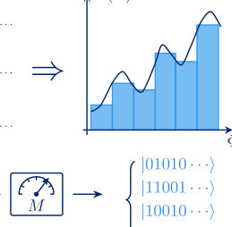
<figcaption class="paper-figure-caption"><b>Fig 1.</b> FIG. 1. Schematic representation of the key ideas. (a) Classical DQMC generates a Markov chain of Hub- bard–Stratonovich configurations through local single-field updates (in red); after equilibration, the histogram of re- tained configurations approaches the target distribution. (b) DQ2MC prepares a coherent superposition of all configura- tions. Computational-basis measurements directly sample configurations from the superposition. (c) A Hadamard test coherently evaluates the ensemble-averaged observable. In (b) and (c), part of the auxiliary-field control qubits can be downgraded to classical control bits optionally; see the hybrid protocol of Sec. IV and its schematic representation in...</figcaption>
</figure>
<figure class="paper-figure-card">
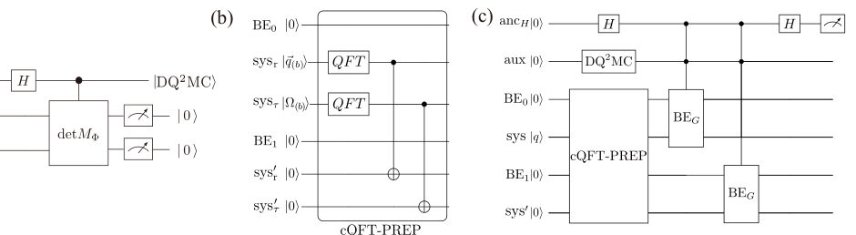
<figcaption class="paper-figure-caption"><b>Fig 2.</b> FIG. 2. Overview of the full quantum protocol. (a) State-preparation circuit: the determinant oracle Odet (boxed gate det MΦ) is applied to the Hadamard-prepared auxiliary-field register aux; postselecting all work registers (drawn separately as sys and anc) on |0⟩leaves | DQ2MC ⟩of Eq. (12) on aux. (b) Gate realization of cQFT-PREP defined in Eq. (19), where QFT stands for quantum Fourier transform. The registers sysr and sysτ denote the qubits for spatial and temporal action-matrix entries, respectively. The register sys′ is a copy of sys. (c) Observable-measurement circuit: a Hadamard test on ancH controls two Green’s-function block encodings BEG acting on a system-copy pair sys, sys′....</figcaption>
</figure>
<figure class="paper-figure-card">
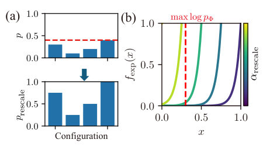
<figcaption class="paper-figure-caption"><b>Fig 3.</b> FIG. 3. Schematic of Preconditioning (a) Schematic of the rescaling: the bare weight distribution pΦ (top) is rescaled by αrescale so that the largest weight saturates the block-encoding bound (bottom). (b) Schematics of clipped target function in Exp-QSVT, tuned by αrescale. Since the signal domain for QSVT is the unit interval, regions where the function value &gt; 1 are clipped to 1. To maintain intact probability weight, αrescale should be chosen such that the clipping is inactive for the max log pΦ, denoted by red dashed line.</figcaption>
</figure>
<figure class="paper-figure-card">
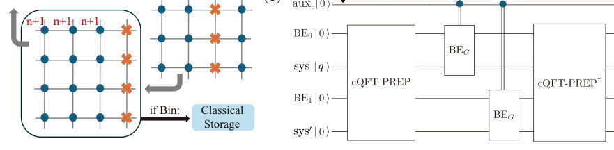
<figcaption class="paper-figure-caption"><b>Fig 4.</b> FIG. 4. Hybrid quantum-classical protocol. (a) Block sweep on the space-time auxiliary field: at Monte-Carlo step n the active block (orange crosses) is kept quantum, while the remaining fields (blue dots) are fixed as classical controls on the action-matrix oracle UM; the active block is updated by measurement and the resulting bits replace the corresponding entries of the classical configuration. When the step is retained as a bin, the full classical configuration Φc is passed to the observable circuit. (b) Hybrid update circuit: Odet (boxed gate det MΦ) is applied to the Hadamard-prepared active register auxq while the complementary register auxc carries the classical Φc; measurement of...</figcaption>
</figure>
<figure class="paper-figure-card">
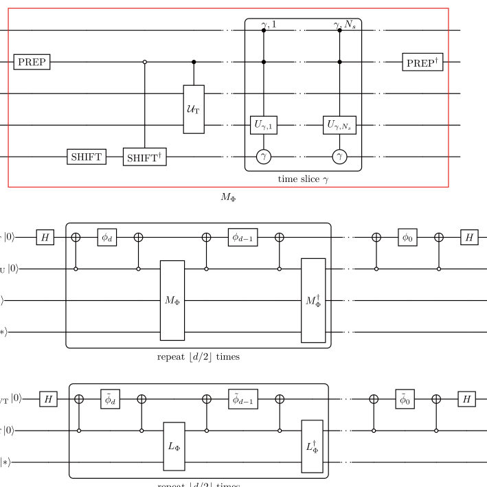
<figcaption class="paper-figure-caption"><b>Fig 5.</b> FIG. 5. Gate-level construction of the determinant oracle. (a) Action-matrix oracle UM, block-encoding MΦ/αM: a single-qubit LCU (PREP, PREP†) selects between the cyclic shift U † shift on the time-slice register sysτ (where circle denotes select-gate) and the kinetic-propagator block encoding UT dressed by the HS-controlled one-body vertices Uγ,i on the spatial register sysr, with the aux register selecting the HS configuration. The red box encloses the preconditioned action matrix MΦ in Eq. (A4). (b) QSVT-log sequence Ulog: an even-parity QSVT polynomial approximating log |x| is realized by interleaving phases ϕ0, . . . , ϕd with ⌊d/2⌋alternating calls to MΦ and M † Φ (with ancBE,LCU...</figcaption>
</figure>
</div>

<p><strong>Summary.</strong> This paper presents DQ2MC, a quantum algorithm designed to simulate strongly correlated electron systems by quantum mechanically implementing the sampling core of classical DQMC. It achieves this by synthesizing amplitudes directly from the action matrix, thus bypassing the exponential storage and sampling bottlenecks. The resulting hybrid protocol offers a path to quantum simulation that retains classical acceleration techniques while improving scaling over classical methods.</p>
<p><strong>Why it may be interesting.</strong> The development of quantum algorithms for simulating interacting fermions directly impacts the field of quantum simulation, offering a potential quantum advantage over classical Monte Carlo methods for materials science.</p>
<details>
<summary>Detailed structure</summary>
<p><strong>Main problem.</strong> The paper addresses the computational bottleneck in simulating strongly correlated lattice fermions, such as those found in the Hubbard model, where interactions are comparable to kinetic energy.</p>
<p><strong>Main result.</strong> They introduce Determinant Quantum-Quantum Monte Carlo (DQ2MC), a quantum algorithm that lifts the auxiliary-field sampling onto a quantum computer, avoiding the enumeration of exponentially many weights.</p>
<p><strong>Method.</strong> The approach involves adapting the classical Determinant Quantum-Monte Carlo (DQMC) method by implementing its core sampling and averaging steps using quantum circuits, leading to both fully-quantum and hybrid quantum-classical protocols.</p>
<p><strong>Model / system.</strong> The focus is on strongly correlated lattice fermions, exemplified by the Hubbard model, relevant to high-temperature superconductivity and Mott insulators. The simulation relies on rewriting the partition function via the Hubbard-Stratonovich transformation.</p>
<p><strong>Key observables.</strong> Thermal expectation values of operators, such as the imaginary-time susceptibility $\chi_O(q, i\Omega_n)$.</p>
<p><strong>Important parameters / regimes.</strong> The scaling is analyzed concerning the spatial volume ($N_{st}$), the imaginary time ($eta$), and the overhead associated with the fermion sign problem.</p>
<p><strong>Assumptions / limitations.</strong> The hybrid protocol assumes that only classical information passes between quantum updates, and the full-quantum protocol assumes the one-body vertices can be implemented as controlled unitaries.</p>
<p><strong>Figures summary.</strong> Figure 1 schematically compares classical DQMC (Markov chain) with DQ2MC (coherent superposition) and illustrates the measurement process using a Hadamard test estimator.</p>
<p><strong>Paper structure.</strong> The paper reviews classical DQMC, then details the fully-quantum protocol (III), develops the hybrid quantum-classical protocol (IV), and discusses extensions.</p>
</details>
<details>
<summary>Abstract</summary>
<p>We introduce determinant quantum-quantum Monte Carlo (DQ$^2$MC), a quantum algorithm that lifts the auxiliary-field sampling and averaging at the operational core of determinant quantum Monte Carlo onto a quantum computer. A determinant oracle synthesizes the DQMC amplitudes directly from a block encoding of the single-particle action matrix via quantum singular value transformations, so that the exponentially many Hubbard-Stratonovich weights are never enumerated, precomputed, or stored. Since the fermions are free for fixed auxiliary fields, the construction operates entirely at the single-particle level, requiring $O(\log N_{\mathrm{st}})$ system qubits and no Jordan-Wigner or Bravyi-Kitaev encoding, where $N_{\mathrm{st}}$ is the space-time volume. A full-quantum protocol makes observables interference amplitudes, eliminating the Markov chain and its autocorrelation time altogether; a hybrid quantum-classical protocol retains a constant-size active block of qubits and replaces the Metropolis-Hastings acceptance step with an exact heat-bath draw, so that cluster updates of any size are rejection-free, and passes only classical information between updates, admitting parallel tempering and distributed execution across quantum processors. The circuit-depth scales more favorably with spatial volume than classical DQMC, at the price of a post-selection overhead determined exactly by the largest target probability --- polynomial for smooth distributions, exponential for sharply peaked ones. Finally, the reweighting estimator underlying the fermion sign problem maps exactly onto a quantum weak value, placing the exponential cost of sign-problematic DQMC in precise correspondence with the post-selection overhead of weak-value extraction.</p>
</details>
<p><sub><a href="#top">↑ back to top</a></sub></p>

<p><a id="paper-2608.30356"></a></p>
<h3 id="quantum-information-in-neutron-proton-scattering-from-the-math913math-matrix"><a href="http://arxiv.org/abs/2608.30356v1">Quantum information in neutron-proton scattering from the $M$ matrix</a></h3>
<p><strong>Authors:</strong> Linjun Xie, Jinniu Hu, Ying Zhang, Hong Shen<br>
<strong>Type:</strong> theory · <strong>Category:</strong> quantum information and computing · <strong>PDF:</strong> <a href="https://arxiv.org/pdf/2608.30356v1">https://arxiv.org/pdf/2608.30356v1</a><br>
<strong>Analysis basis:</strong> full PDF text, analyzed in chunks
<strong>Topic relevance:</strong> <code>quantum measurements</code> <strong>2/5</strong></p>
<div class="figure-strip-hint">↔ Scroll figures horizontally</div>
<div class="paper-figures-scroll">
<figure class="paper-figure-card">
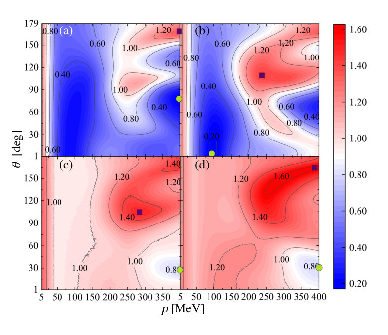
<figcaption class="paper-figure-caption"><b>Fig 1.</b> FIG. 1. Momentum- and angle-dependent ensemble-averaged output mutual information I(p, θ).</figcaption>
</figure>
<figure class="paper-figure-card">
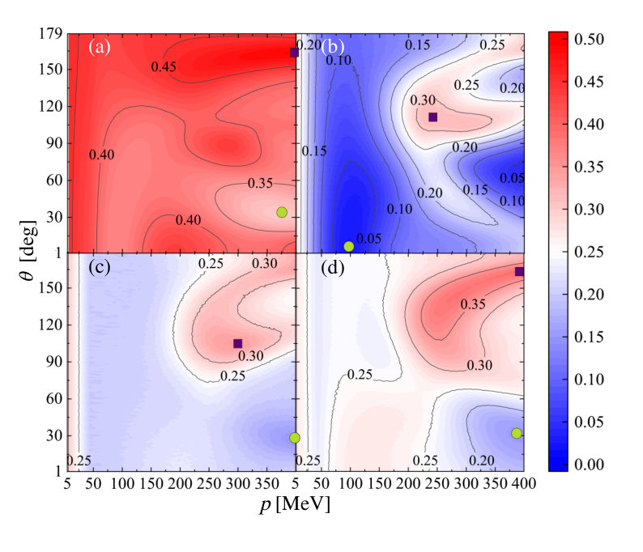
<figcaption class="paper-figure-caption"><b>Fig 2.</b> FIG. 2. Momentum- and angle-dependent ensemble-averaged output linear entropy SL(p, θ). Pan-</figcaption>
</figure>
<figure class="paper-figure-card">
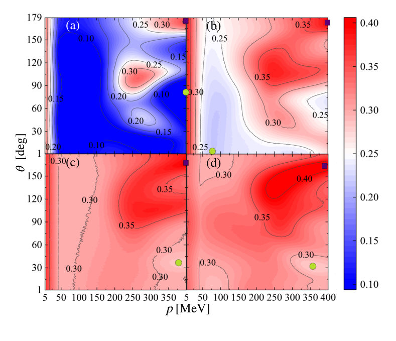
<figcaption class="paper-figure-caption"><b>Fig 3.</b> FIG. 3. Momentum- and angle-dependent ensemble-averaged output negativity N(p, θ). The color</figcaption>
</figure>
<figure class="paper-figure-card">
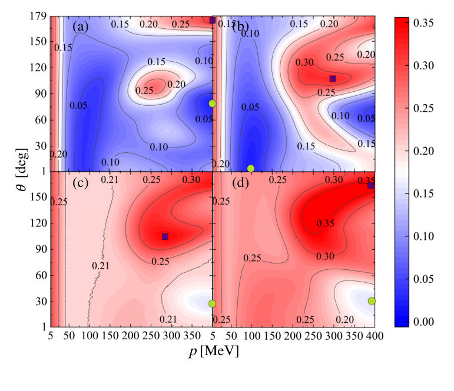
<figcaption class="paper-figure-caption"><b>Fig 4.</b> FIG. 4. Momentum- and angle-dependent ensemble-averaged geometric quantum discord DG(p, θ).</figcaption>
</figure>
</div>

<p><strong>Summary.</strong> This theoretical paper analyzes quantum information in neutron-proton scattering using the spin-space M-matrix. By comparing results from four different input state classes—ranging from classical mixtures to highly entangled states—the authors show that output spin correlations depend critically on the input state's coherence and entanglement. This provides a new, ensemble-based understanding of quantum correlations in nuclear reactions.</p>
<p><strong>Why it may be interesting.</strong> This work provides a rigorous, ensemble-based description of how quantum correlations are generated in a fundamental scattering process, linking fundamental quantum information theory metrics to nuclear physics observables.</p>
<details>
<summary>Detailed structure</summary>
<p><strong>Main problem.</strong> The study investigates the quantum-information aspects of neutron-proton scattering, specifically how input quantum state properties influence the output spin correlations.</p>
<p><strong>Main result.</strong> Outgoing spin correlations are jointly governed by scattering kinematics and the structure of the incoming quantum ensemble; stronger input coherence/entanglement leads to larger quantum information measures.</p>
<p><strong>Method.</strong> The authors calculate ensemble-averaged output quantum measures (Mutual Information, Negativity, Quantum Discord) using the spin-space M-matrix framework across four distinct classes of input states.</p>
<p><strong>Model / system.</strong> The physical system is neutron-proton (np) scattering. The analysis uses the spin-space M-matrix framework to map input spin states ($
ho_{    ext{in}}$) to output states ($
ho_{    ext{out}}$). Input states range from classical mixed states to general entangled pure states.</p>
<p><strong>Key observables.</strong> Ensemble-averaged Mutual Information, Reduced-state Linear Entropy, Negativity, and Geometric Quantum Discord.</p>
<p><strong>Important parameters / regimes.</strong> Relative momentum and scattering angle ($   heta$), and the specific structure of the input quantum ensemble (e.g., diagonal vs. entangled).</p>
<p><strong>Assumptions / limitations.</strong> The analysis uses a conditional M-matrix map, which is noted to not represent a global trace-preserving S-matrix evolution.</p>
<p><strong>Figures summary.</strong> Figures (e.g., Fig. 4) show momentum- and angle-dependent ensemble-averaged geometric quantum discord for the four input-state classes, while Tables provide global quantitative comparisons of extrema.</p>
<p><strong>Paper structure.</strong> The paper systematically analyzes four input state classes (diagonal mixed, separable pure, general pure, Schmidt-like entangled) by calculating and comparing output quantum information measures across the kinematic plane, contrasting the results with previous product-state entanglement power analyses.</p>
</details>
<details>
<summary>Abstract</summary>
<p>We study quantum-information aspects of neutron--proton scattering in the spin-space $M$-matrix framework. Four representative classes of input states are considered, namely diagonal mixed states, separable pure states, general two-qubit pure states, and a special Schmidt-like entangled subclass. For each class, ensemble-averaged output mutual information, reduced-state linear entropy, negativity, and geometric quantum discord are calculated in the relative momentum-- scattering angle plane. The results show that the outgoing spin correlations are governed jointly by scattering kinematics and by the structure of the incoming quantum ensemble. Input states with stronger intrinsic coherence or entanglement give larger maxima and higher minima in the mutual information, negativity, and geometric quantum discord. The enhanced regions of the mutual information and geometric discord depend on the input states, while the negativity maximum remains concentrated in the high-momentum backward-scattering region. These results extend earlier studies based on product-state entanglement power and provide an ensemble-based description of how spin correlations in neutron--proton scattering arise from the interplay between input-state structure and scattering dynamics.</p>
</details>
<p><sub><a href="#top">↑ back to top</a></sub></p>

<p><a id="paper-2608.30507"></a></p>
<h3 id="quantum-non-local-games-quantum-relations-projection-lattices-and-rule-operators"><a href="http://arxiv.org/abs/2608.30507v1">Quantum non-local games: Quantum relations, projection lattices and rule operators</a></h3>
<p><strong>Authors:</strong> Alexandros Chatzinikolaou<br>
<strong>Type:</strong> theory · <strong>Category:</strong> other · <strong>PDF:</strong> <a href="https://arxiv.org/pdf/2608.30507v1">https://arxiv.org/pdf/2608.30507v1</a><br>
<strong>Analysis basis:</strong> full PDF text, analyzed in chunks
<strong>Topic relevance:</strong> <code>quantum measurements</code> <strong>2/5</strong></p>
<div class="figure-strip-hint">↔ Scroll figures horizontally</div>
<div class="paper-figures-scroll">
<figure class="paper-figure-card">
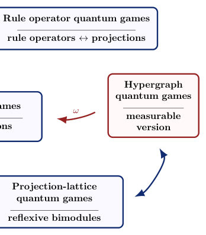
<figcaption class="paper-figure-caption"><b>Fig 1.</b> Figure 1. The main quantum-game formalisms compared in this paper through associated operator spaces; ω-labelled arrows also preserve the value theory.</figcaption>
</figure>
</div>

<p><strong>Summary.</strong> This paper unifies multiple mathematical descriptions of quantum non-local games—including those based on projection lattices, hypergraphs, and rule operators—into a single operator-algebraic framework. By identifying the 'winning transformation space' as the central object, the authors show that these disparate models describe the same underlying mathematical structure. This provides a powerful, consistent theoretical tool for analyzing quantum correlations and non-locality.</p>
<p><strong>Why it may be interesting.</strong> While the topic is abstract quantum information theory, the rigorous mathematical framework connecting different physical models (like graph homomorphisms) to a single algebraic structure is highly relevant for developing general theoretical tools in quantum physics.</p>
<details>
<summary>Detailed structure</summary>
<p><strong>Main problem.</strong> The paper aims to systematically compare various mathematical formalisms used to describe quantum non-local games and establish a unified operator-algebraic framework for them.</p>
<p><strong>Main result.</strong> The winning strategies across diverse game models (projection-lattice, hypergraph, rule operators) are unified by the concept of an operator bimodule, with projection-lattice games capturing the reflexive part of this structure.</p>
<p><strong>Method.</strong> The authors use operator algebra techniques, defining the 'winning transformation space' as the central object of comparison across different game definitions.</p>
<p><strong>Model / system.</strong> The core model is the quantum non-local game, involving separated players and a referee, formalized using input/output von Neumann algebras and projection test structures.</p>
<p><strong>Key observables.</strong> The winning transformation space (an operator bimodule), the game value (probability), and the property of 'perfectness' of a strategy.</p>
<p><strong>Important parameters / regimes.</strong> The structure of the input/output von Neumann algebras ($X, Y, A, B$) and the referee algebra ($\mathcal{R}$).</p>
<p><strong>Assumptions / limitations.</strong> The analysis extends to arbitrary, possibly infinite-dimensional, referee von Neumann algebras ($\mathcal{R}$), and relies on comparing the 'reflexive' parts of the various formalisms.</p>
<p><strong>Figures summary.</strong> Figure 1 summarizes the main quantum-game formalisms compared, including Projection-lattice, Rule operator, and Hypergraph quantum games.</p>
<p><strong>Paper structure.</strong> The paper proceeds by defining the prototypical projection-test game, then systematically comparing its winning space to those derived from projection-lattice games, hypergraph games, and rule operators, culminating in comparisons of concurrency conditions.</p>
</details>
<details>
<summary>Abstract</summary>
<p>Quantum non-local games with quantum inputs or outputs have been formulated in several different languages, including rank-one and quantum XOR games, support maps between projection lattices, probabilistic quantum hypergraphs, and Frobenius-algebraic rule operators on finite quantum sets. We give a unified operator-algebraic comparison of these models by assigning to each rule its winning transformation space: the operator space of transformations accepted with certainty. We introduce \(\mathcal R\)-projection-test quantum games with finite-dimensional input and output von Neumann algebras and an arbitrary, possibly infinite-dimensional, referee von Neumann algebra \(\mathcal R\). Their winning transformation spaces are precisely operator spaces with a natural bimodule structure, equivalently rectangular quantum relations. We compare this formalism with projection-lattice games, hypergraph quantum games, and the graphical rule-operator definition. Projection-lattice games capture exactly the reflexive winning bimodules. Hypergraph quantum games admit value-preserving projection-test realisations, and, after passing to perfect transformations, describe the same reflexive part as projection-lattice games. Using Daws' technique, we also translate rule operators to projections in tensor products of finite-dimensional von Neumann algebras. This identification places graphical rules in the same operator-bimodule framework and preserves both values and perfectness. Finally, we compare concurrency with the synchronicity conditions of Goldberg and of Bochniak--Kasprzak--Sołtan. The framework is illustrated by classical, rank-one, quantum XOR, colouring, and quantum graph homomorphism and isomorphism games.</p>
</details>
<p><sub><a href="#top">↑ back to top</a></sub></p>

<p><a id="paper-2608.29915"></a></p>
<h3 id="symmetry-enforced-topological-structures-in-quantum-phase-diagrams"><a href="http://arxiv.org/abs/2608.29915v1">Symmetry-Enforced Topological Structures in Quantum Phase Diagrams</a></h3>
<p><strong>Authors:</strong> Linhao Li, Yuan Yao<br>
<strong>Type:</strong> theory · <strong>Category:</strong> other · <strong>PDF:</strong> <a href="https://arxiv.org/pdf/2608.29915v1">https://arxiv.org/pdf/2608.29915v1</a><br>
<strong>Analysis basis:</strong> full PDF text, analyzed in chunks
<strong>Topic relevance:</strong> <code>analog quantum simulation</code> <strong>2/5</strong></p>
<div class="figure-strip-hint">↔ Scroll figures horizontally</div>
<div class="paper-figures-scroll">
<figure class="paper-figure-card">
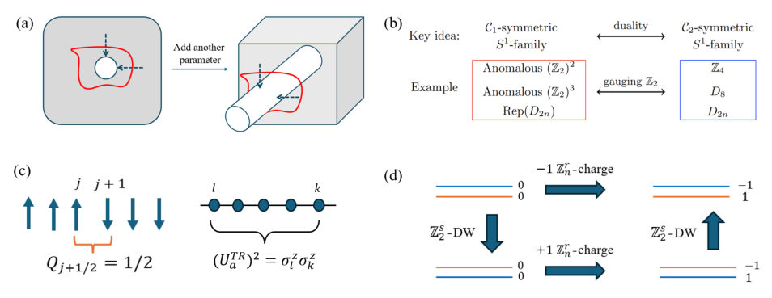
<figcaption class="paper-figure-caption"><b>Fig 1.</b> FIG. 1: (a) Noncontractible loops are stable, e.g., adding another parameter to the phase diagram cannot trivialize the non-contractibility due to the inevitable gapless phase (white area) bounded by the loop. In the current case, we need to finetune only two parameters to reach the gapless phase numerically or experimentally. (b) The duality method to study S1-family with examples shown in the boxes. (c) For the Zx 2 × Za 2 symmetry, a domain wall of either Z2 symmetry carries a half charge of the other. Here, U TR a denotes the truncation of Ua to a finite interval l ≤j ≤k, which creates a Za 2 domain wall at each boundary. The second panel therefore means that two Za 2 domain walls carry...</figcaption>
</figure>
<figure class="paper-figure-card">
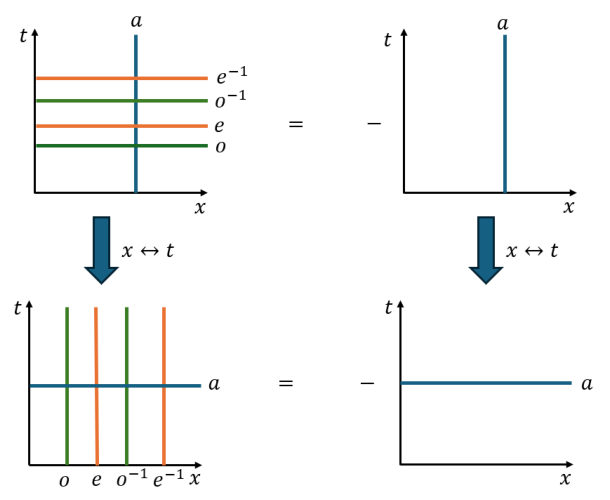
<figcaption class="paper-figure-caption"><b>Fig 2.</b> FIG. 2: The symmetry defect configuration in the spacetime. Here the symmetry defect lines which are vertical to x or t direction correspond to inserting the domain walls or adding symmetry operators in the path integral.</figcaption>
</figure>
</div>

<p><strong>Summary.</strong> This paper develops a generalized framework to classify the topological structure of quantum phase diagrams by analyzing non-contractible loops ($S^1$-families). It shows that exotic symmetry interplay, such as mixed anomalies, yields novel classifications that extend beyond previous methods. The work uses duality and pumping arguments to rigorously characterize these topological invariants for various symmetry-protected systems.</p>
<p><strong>Why it may be interesting.</strong> The detailed analysis of symmetry-enforced topological invariants, especially those involving mixed anomalies and noninvertible operators, provides a powerful, generalized tool for classifying quantum phases beyond standard symmetry protection.</p>
<details>
<summary>Detailed structure</summary>
<p><strong>Main problem.</strong> The study focuses on classifying the topological structure of the quantum phase diagram of gapped systems by identifying non-contractible loops, known as $S^1$-families.</p>
<p><strong>Main result.</strong> The presence of exotic symmetry interplay, such as nontrivial mixed anomalies and semi-direct product relations, leads to novel $S^1$-family classifications inaccessible by earlier methods.</p>
<p><strong>Method.</strong> The authors employ the Kramers-Wannier (KW) duality approach and analyze charge/domain-wall pumping associated with unitary evolution operators to characterize these topological invariants.</p>
<p><strong>Model / system.</strong> The research analyzes gapped quantum systems described by many-body Hamiltonians, specifically examining symmetries like $Z_2$, $Z_4$, and $D_{2n}$ structures in 1D chains.</p>
<p><strong>Key observables.</strong> The primary observables are the $S^1$-family classification (topological invariant), charge pumping (e.g., $Z_2$-charge pumping), and domain-wall pumping.</p>
<p><strong>Important parameters / regimes.</strong> The classification depends critically on the symmetry structure, particularly whether the symmetry group exhibits mixed anomalies or semidirect product relations.</p>
<p><strong>Assumptions / limitations.</strong> The analysis relies on the assumption that the topological structure can be captured by analyzing non-contractible loops in the parameter space of the Hamiltonian.</p>
<p><strong>Figures summary.</strong> Figures illustrate non-contractible loops, the duality mapping between phase structures, and the relationships between different types of charge and domain-wall pumping.</p>
<p><strong>Paper structure.</strong> The paper develops the framework by first introducing the concept of $S^1$-families via non-contractible loops, then applying KW duality to map between different symmetry-protected topological (SPT) phases, and finally detailing the classification for specific symmetry groups like $D_{2n}$ using anomaly arguments.</p>
</details>
<details>
<summary>Abstract</summary>
<p>We study the topological structure of the quantum phase diagram of gapped systems by identifying the noncontractibility of loops, so-called $S^1$-families, within the gapped phase diagram in which many-body Hamiltonians can have nontrivial ground-state degeneracy. We manifest the role of symmetries in such $S^1$-family classifications by the exotic symmetry interplay: (i) nontrivial mixed anomalies, (ii) semi-direct product relation between the spontaneously broken and the unbroken symmetries, and (iii) symmetry with noninvertible operators. We find that such structures lead to the novel $S^1$-family classifications inaccessible by earlier classifications based on ``independent'' symmetries. Furthermore, we construct lattice realizations of these $S^1$-families and explicitly demonstrate their novel algebraic structures.</p>
</details>
<p><sub><a href="#top">↑ back to top</a></sub></p>

<p><a id="paper-2608.29734"></a></p>
<h3 id="the-quantum-supremum-of-the-math933math-bell-inequality-is-not-attained-in-finite-dimension"><a href="http://arxiv.org/abs/2608.29734v1">The quantum supremum of the $I_{3322}$ Bell inequality is not attained in finite dimension</a></h3>
<p><strong>Authors:</strong> Jef Pauwels<br>
<strong>Type:</strong> theory · <strong>Category:</strong> quantum information and computing · <strong>PDF:</strong> <a href="https://arxiv.org/pdf/2608.29734v1">https://arxiv.org/pdf/2608.29734v1</a><br>
<strong>Analysis basis:</strong> full PDF text, analyzed in chunks
<strong>Topic relevance:</strong> <code>quantum measurements</code> <strong>2/5</strong></p>
<div class="figure-strip-hint">↔ Scroll figures horizontally</div>
<div class="paper-figures-scroll">
<figure class="paper-figure-card">
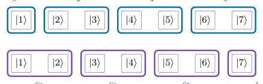
<figcaption class="paper-figure-caption"><b>Fig 1.</b> FIG. 1. The Pál–Vértesi construction. Alice’s and Bob’s first two measurements use two-dimensional blocks offset by one Schmidt basis vector; the third measurements use the complementary pairings. A finite PV strategy is specified by its Schmidt coefficients λi and the spectral labels ci appearing in Eq. (5).</figcaption>
</figure>
<figure class="paper-figure-card">
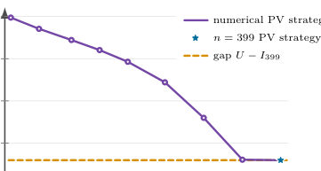
<figcaption class="paper-figure-caption"><b>Fig 2.</b> FIG. 3. Numerical convergence of finite PV strategies. We plot U −In, where In is the value of a PV strategy with n Schmidt coefficients. All points are numerical optimizations, the star marks n = 399, and the dashed line marks U −I399. Here U = 0.25087540 is the ordinary level-four NPA value reported in Ref. [35].</figcaption>
</figure>
</div>

<p><strong>Summary.</strong> This theoretical work proves that the quantum supremum of the $I_{3322}$ Bell inequality cannot be reached using any finite-dimensional quantum strategy. The authors show that while the supremum is approached by a specific sequence of strategies, achieving it requires an infinitely large local dimension. This highlights a non-closure property for quantum correlations in this specific scenario.</p>
<p><strong>Why it may be interesting.</strong> It provides a rigorous mathematical boundary on the correlations achievable in quantum information protocols, demonstrating a fundamental gap between the supremum and any finite-dimensional realization.</p>
<details>
<summary>Detailed structure</summary>
<p><strong>Main problem.</strong> The paper investigates whether the quantum supremum of the $I_{3322}$ Bell inequality can be attained using strategies restricted to finite local Hilbert space dimensions.</p>
<p><strong>Main result.</strong> The authors prove that the quantum supremum is approached by a specific family of strategies (Pál–Vértesi) but is never actually attained in any finite dimension.</p>
<p><strong>Method.</strong> The proof uses symmetry arguments on the Bell functional, mapping strategies to finite probability matrices, and employing contradiction to show that optimality requires an unnormalizable state.</p>
<p><strong>Model / system.</strong> The system is defined by the $I_{3322}$ Bell inequality, which is a specific quantum correlation test involving four measurement settings (3, 3, 2, 2). The analysis focuses on the limitations imposed by finite local dimensions.</p>
<p><strong>Key observables.</strong> The Bell value $I_{3322}$, the supremum $eta_{PV}$, and the upper-bound functional $\Phi(	heta)$ derived from spectral-weight matrices.</p>
<p><strong>Important parameters / regimes.</strong> The local Hilbert-space dimension ($n$), which must be unbounded to approach the supremum.</p>
<p><strong>Assumptions / limitations.</strong> The analysis relies on reducing the Bell value to an upper bound $\Phi(	heta)$ dependent on the spectral-weight matrix $   heta$, and formalizing the proof in Lean 4.</p>
<p><strong>Figures summary.</strong> Figure 1 illustrates the Pál–Vértesi construction pattern for measurements, and Figure 2 shows how the spectral-weight matrix entries are reproduced by the PV chains.</p>
<p><strong>Paper structure.</strong> The paper establishes the equality between the quantum supremum and the limit derived from the PV family, then uses contradiction based on optimality conditions to prove non-attainment in finite dimensions, concluding that the set of finite-dimensional correlations is not closed.</p>
</details>
<details>
<summary>Abstract</summary>
<p>In 2010, Pál and Vértesi found a family of finite-dimensional strategies for the $I_{3322}$ Bell inequality whose optimized values appeared to converge as the local Hilbert-space dimension grew. They conjectured that this limit is the supremum over all finite-dimensional quantum strategies, but that no finite-dimensional strategy attains it. We prove both claims. The proof uses the symmetry of the Bell functional to associate every strategy with a finite matrix of probabilities, one for each pair of spectral subspaces of Alice and Bob. This matrix gives an upper bound on the Bell value, and finite-dimensional strategies built from the repeating structure found by Pál and Vértesi approach it as the dimension grows. If the bound were attained exactly in finite dimension, the optimality conditions would then require a state that cannot be normalized. Consequently, the set of finite-dimensional quantum correlations is not closed in the $(3,3,2,2)$ scenario, the smallest Bell scenario where this can happen. Moreover, approaching the supremum requires unbounded local dimension. The core of the proof was formalized in Lean~4.</p>
</details>
<p><sub><a href="#top">↑ back to top</a></sub></p>

<p><a id="paper-2608.30863"></a></p>
<h3 id="self-diffusion-of-water-through-thermally-activated-membranes"><a href="http://arxiv.org/abs/2608.30863v1">Self-Diffusion of Water through Thermally Activated Membranes</a></h3>
<p><strong>Authors:</strong> Carlos Handrey A. Ferraz<br>
<strong>Type:</strong> theory · <strong>Category:</strong> statistical mechanics · <strong>PDF:</strong> <a href="https://arxiv.org/pdf/2608.30863v1">https://arxiv.org/pdf/2608.30863v1</a><br>
<strong>Analysis basis:</strong> full PDF text, analyzed in chunks
<strong>Topic relevance:</strong> <code>Frenkel-Kontorova</code> <strong>1/5</strong> · <code>Keldysh / 2PI / non-Gaussian methods</code> <strong>1/5</strong> · <code>correlated / nonlocal dissipation</code> <strong>1/5</strong> · <code>driven-dissipative phase transition</code> <strong>1/5</strong> · <code>methods for driven-dissipative</code> <strong>1/5</strong> · <code>non-equilibrium universality</code> <strong>1/5</strong> · <code>quantum measurements</code> <strong>1/5</strong> · <code>scars &amp; prethermalization</code> <strong>1/5</strong></p>
<div class="figure-strip-hint">↔ Scroll figures horizontally</div>
<div class="paper-figures-scroll">
<figure class="paper-figure-card">
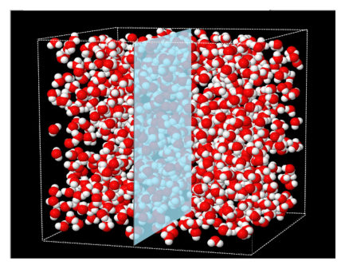
<figcaption class="paper-figure-caption"><b>Fig 1.</b> Figure 1: The schematic depicts a three-dimensional simulation box with periodic boundary conditions containing N = 103 water molecules. A single thermoactivated membrane (rendered in trans- parent blue) is positioned at the center of the box.</figcaption>
</figure>
<figure class="paper-figure-card">
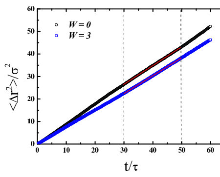
<figcaption class="paper-figure-caption"><b>Fig 2.</b> Figure 2: Plot of the MSD as a function of time at temperature T = 387.3 K and density ρ = 1.0 g/cm3 for two different W-membrane configurations (see Sec. 3). The self-diffusion coefficient, D, is deter- mined from the slope of the MSD according to Eq. (18). The asymp- totic diffusion coefficient is obtained by performing a least-squares linear fit to the long-time regime (red solid lines), over the time inter- val from 30τ to 50τ (black dashed lines). Similar plots are obtained for the other temperatures and densities investigated. The scaling pa- rameters σ and τ are listed in Table 1.</figcaption>
</figure>
<figure class="paper-figure-card">
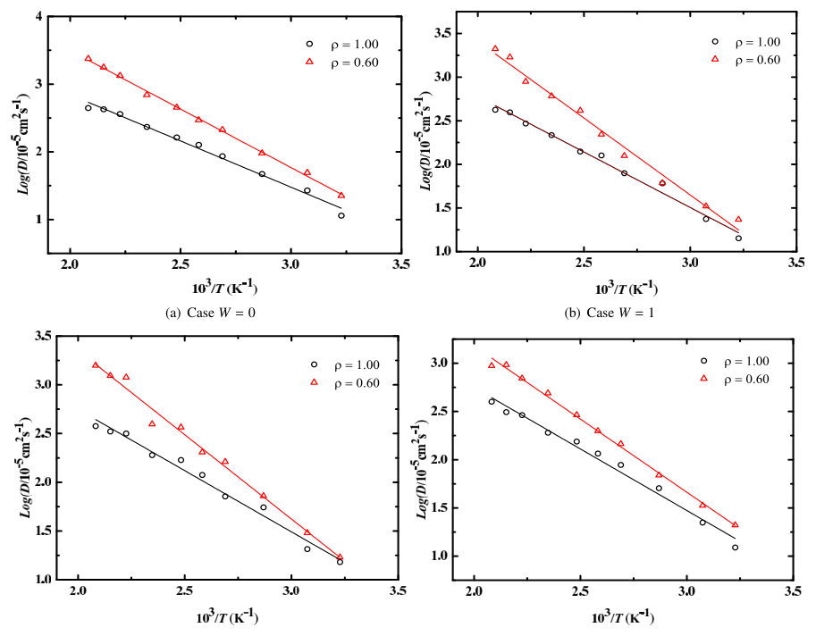
<figcaption class="paper-figure-caption"><b>Fig 3.</b> Figure 3: Semi-log plot of the self-diffusion coefficients (in physical units) as a function of temperature for the different TAM configurations and the two water-density regimes. The Arrhenius curve fitted to data are also shown (solid lines) and the respective activation energies (Ea) and pre-exponential factor (D0) are reported in Table 2. Error bars are of the same size of plot symbols and are not showed. (a) Absence of TAMs (W = 0). (b) Presence of a single TAM (W = 1). (c) Presence of two TAMs (W = 2). (d) Presence of three TAMs (W = 3).</figcaption>
</figure>
<figure class="paper-figure-card">
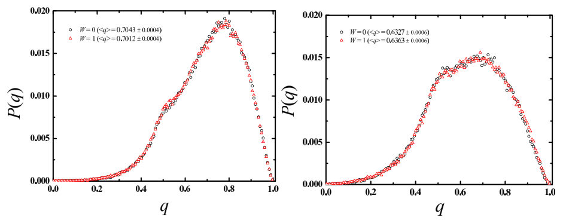
<figcaption class="paper-figure-caption"><b>Fig 4.</b> Figure 4: Tetrahedrality distribution, P(q), and the mean tetrahedrality, ⟨q⟩(see the plot legends), at temperatures (a) T = 310, K and (b) T = 387, K for the two W cases considered, at a water density of 1.0 g/cm3. According to Eq. (13), at T = 310 K, the probability that a given water molecule undergoes elastic scattering at the membrane is p ≃0.52, whereas at T = 387 K, this probability increases to p ≃0.75.</figcaption>
</figure>
<figure class="paper-figure-card">
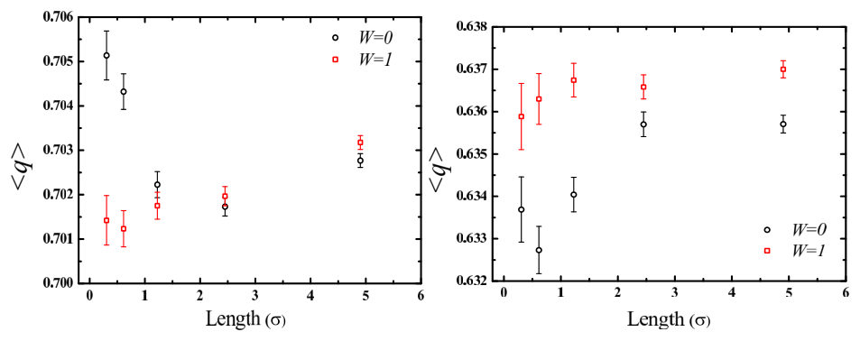
<figcaption class="paper-figure-caption"><b>Fig 5.</b> Figure 5: Mean tetrahedrality, ⟨q⟩, calculated for water molecules within virtual boxes of different lengths centered at the membrane (x = 0), at (a) T = 310, K and (b) T = 387, K, for a water density of 1.0 g/cm3. Results are shown for two different W cases, with the virtual-box length ranging from L/32 to L/2 (L = 9.8 σ).</figcaption>
</figure>
</div>

<p><strong>Summary.</strong> This work uses Molecular Dynamics simulations to study how water diffuses through membranes that introduce stochastic scattering events. The research finds that while the membranes significantly impede bulk diffusion, they have only a minor effect on the local structural order or the lifetime of hydrogen bonds. This highlights a decoupling between macroscopic transport and local molecular structure.</p>
<p><strong>Why it may be interesting.</strong> The study models non-equilibrium transport phenomena in a complex fluid system, providing insights into how imposed boundaries or interfaces (like membranes) modify fundamental transport coefficients, which is relevant to open quantum systems and energy dissipation.</p>
<details>
<summary>Detailed structure</summary>
<p><strong>Main problem.</strong> The study investigates how the self-diffusion of water is altered when passing through Thermally Activated Membranes (TAMs). It aims to understand the influence of these stochastic interfaces on particle dynamics and hydrogen-bond structure.</p>
<p><strong>Main result.</strong> TAMs significantly decrease the self-diffusion coefficient as the number of membranes increases, but they only exert a weak influence on the local tetrahedral order parameter and hydrogen-bond lifetime.</p>
<p><strong>Method.</strong> Molecular Dynamics (MD) simulations are employed to track particle trajectories and calculate various thermodynamic and structural properties over a range of temperatures.</p>
<p><strong>Model / system.</strong> The system uses the SPC/E water model confined in a cubic domain containing planar TAMs. The membrane interaction is modeled stochastically, inducing elastic scattering events governed by a temperature-dependent sigmoidal probability.</p>
<p><strong>Key observables.</strong> Self-diffusion coefficient (D), tetrahedral order parameter ($\langle q 
angle$), Hydrogen-bond (HB) lifetime ($  au_{HB}$), and effective activation energy ($E_a$).</p>
<p><strong>Important parameters / regimes.</strong> Temperature (T), membrane configuration (number of TAMs, W), and reduced temperature ($ heta = T/T_0$).</p>
<p><strong>Assumptions / limitations.</strong> The membrane interaction is modeled as a probabilistic, elastic scattering event; the system dynamics are analyzed using MD simulations.</p>
<p><strong>Figures summary.</strong> Figures show MSD vs. time for diffusion coefficient calculation, $\langle q 
angle$ vs. T for structure, and $    au_{HB}$ vs. T for dynamics, comparing membrane presence (W=0 vs W=3).</p>
<p><strong>Paper structure.</strong> The paper systematically calculates diffusion coefficients, structural parameters ($\langle q 
angle$), and HB lifetimes across different membrane configurations and temperatures, comparing results to established theoretical approximations like the Arrhenius law.</p>
</details>
<details>
<summary>Abstract</summary>
<p>Diffusion processes involving membranes are of fundamental importance in both science and technology, since membranes serve as selective interfaces that regulate the transport of mass, charge, and information across multiple length and time scales. In this study, we employ molecular dynamics (MD) simulations to calculate the self-diffusion coefficient, tetrahedral order parameter and hydrogen-bond (HB) lifetime of SPC/E water over a wide high-temperature range in the presence of thermally activated membranes (TAMs). These membranes exhibit thermally controlled stochastic behavior that locally influences particle dynamics by probabilistically inducing elastic scattering events as particles traverse the membrane. The stochastic behavior of the membranes is governed by a sigmoidal profile, which depend on the reduced temperature of the system. The effective activation energy for diffusion is estimated for several membrane configurations. It is found that the diffusion coefficients generally decrease with an increase in the number of membranes and are in reasonable agreement with the Arrhenius approximation at high temperatures. Additionally, both the tetrahedral order parameter and the HB lifetime are only locally sensitive to the action of the membranes.</p>
</details>
<p><sub><a href="#top">↑ back to top</a></sub></p>

<p><a id="paper-2608.30276"></a></p>
<h3 id="efficient-biphoton-generation-by-a-waveguide-coupled-single-atom"><a href="http://arxiv.org/abs/2608.30276v1">Efficient biphoton generation by a waveguide-coupled single atom</a></h3>
<p><strong>Authors:</strong> Mao-Hua Wang, Xiao-Jun Zhang, M. Artoni, G. C. La Rocca, Jin-Hui Wu<br>
<strong>Type:</strong> theory · <strong>Category:</strong> other · <strong>PDF:</strong> <a href="https://arxiv.org/pdf/2608.30276v1">https://arxiv.org/pdf/2608.30276v1</a><br>
<strong>Analysis basis:</strong> full PDF text, analyzed in chunks
<strong>Topic relevance:</strong> <code>Keldysh / 2PI / non-Gaussian methods</code> <strong>1/5</strong> · <code>Tavis-Cummings &amp; cavity-many-emitter</code> <strong>1/5</strong> · <code>analog quantum simulation</code> <strong>1/5</strong> · <code>correlated / nonlocal dissipation</code> <strong>1/5</strong> · <code>driven-dissipative phase transition</code> <strong>1/5</strong> · <code>interference shaping light</code> <strong>1/5</strong> · <code>methods for driven-dissipative</code> <strong>1/5</strong></p>
<div class="figure-strip-hint">↔ Scroll figures horizontally</div>
<div class="paper-figures-scroll">
<figure class="paper-figure-card">
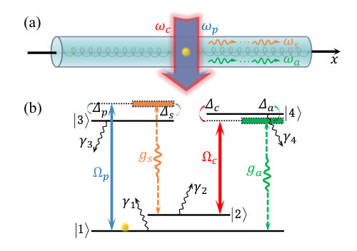
<figcaption class="paper-figure-caption"><b>Fig 1.</b> FIG. 1. (a) Schematic illustration of the paired generation of a Stokes (ωs) and an anti-Stokes (ωa) photon from a single atom trapped close to a chiral helical waveguide when illuminated by a pump (ωp) and a coupling (ωc) field. (b) The double- Λ configuration of a four-level atom allowing for the closed- loop SFWM process |1⟩→|3⟩→|2⟩→|4⟩→|1⟩of ampli- tude decay rates γ1, γ2, γ3, and γ4 toward free space. The pump and coupling fields act upon transitions |1⟩↔|3⟩and |2⟩↔|4⟩with Rabi frequencies (detunings) Ωp = µ31Ep/2ℏ and Ωc = µ42Ec/2ℏ(∆p = ωp −ω31 and ∆c = ωc −ω42), re- spectively. Continuous chiral waveguide modes near resonant with transitions |2⟩↔|3⟩and |1⟩↔|4⟩facilitate the direc-...</figcaption>
</figure>
<figure class="paper-figure-card">
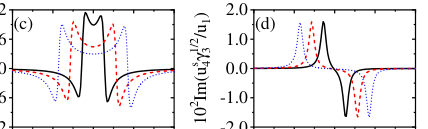
<figcaption class="paper-figure-caption"><b>Fig 2.</b> FIG. 2. Real (a) and imaginary (b) parts of 102us 2/u1 in units of γ−1/2 3 against ∆sp/γ3 or real (c) and imaginary (d) parts of 102us 4/u1 in units of γ−1/2 3 against ∆sp/γ3. Black-solid, red-dashed, and blue-dotted lines refer to Ωc/γ3 = 2.0, 4.0, and 6.0, respectively. Other parameters are Ωp/γ3 = 1.0, ∆p/γ3 = 10, ∆c = 0, Γs/γ3 = Γa/γ3 = 0.1, and γ4 = γ3.</figcaption>
</figure>
<figure class="paper-figure-card">
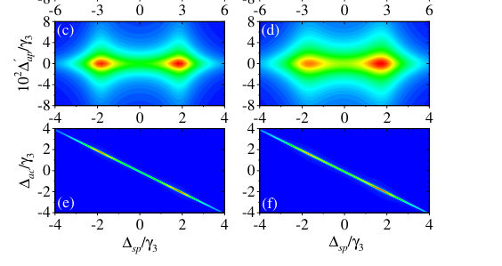
<figcaption class="paper-figure-caption"><b>Fig 3.</b> FIG. 3. Modulus of 10usa 1 /u1 in units of γ−1 3 against ∆sp/γ3 and ∆′ ap/γ3 (a, b, c, d) or ∆sp/γ3 and ∆ac/γ3 (e, f) with ∆ac = ∆a −∆c. Parameters are the same as in Fig. 2 except Γs/γ3 = Γa/γ3 = 0.1 in (a, c, e) while 0.5 in (b, d, f) as well as Ωc/γ3 = 4.0 in (a, b) while Ωc/γ3 = 2.0 in (c, d, e, f).</figcaption>
</figure>
<figure class="paper-figure-card">
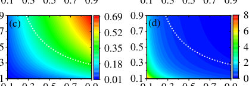
<figcaption class="paper-figure-caption"><b>Fig 4.</b> FIG. 5. 102Ps (a), Psa (b), 102Rsa in units of γ3 (c), and 10−3g(2) sa (d) at τγ3 = 0.36 against Γs/γ3 and Γa/γ3. Other parameters are the same as in Fig. 2 except Ωc/γ3 = 4.0.</figcaption>
</figure>
</div>

<p><strong>Summary.</strong> This paper theoretically models the efficient generation of entangled biphoton pairs using a single atom coupled to a chiral waveguide via spontaneous four-wave mixing. By developing a perturbative treatment, the authors show that this platform achieves high generation rates comparable to bulk media while offering superior on-chip integration advantages. The results confirm the potential of single-emitter quantum sources for next-generation quantum technologies.</p>
<p><strong>Why it may be interesting.</strong> This work provides a detailed theoretical framework for realizing solid-state quantum light sources using atomic coherence effects, which is highly relevant to open quantum systems and quantum optics.</p>
<details>
<summary>Detailed structure</summary>
<p><strong>Main problem.</strong> The paper addresses the need for high-performance, compact quantum light sources, specifically efficient biphoton generation, to overcome limitations in current free-space quantum optics methods.</p>
<p><strong>Main result.</strong> The authors demonstrate that a single atom coupled to a chiral waveguide can achieve biphoton generation rates comparable to long cold atomic ensembles while maintaining low loss and scalability for on-chip integration.</p>
<p><strong>Method.</strong> A perturbative treatment is developed based on the system's Hamiltonian, analyzing the steady-state solutions for probability amplitudes to derive the generation rates and spectral correlations.</p>
<p><strong>Model / system.</strong> The physical system is a single atom undergoing spontaneous four-wave mixing (SFWM) near a chiral waveguide, modeled as a four-level atomic system with coupling to guided and unguided modes.</p>
<p><strong>Key observables.</strong> Biphoton generation rate ($R_{sa}$), single-photon probability ($P_s$), two-photon correlation function ($g^{(2)}_{sa}$), and the spectral joint response $|\alpha_{s1}|$.</p>
<p><strong>Important parameters / regimes.</strong> Atomic decay rates ($\gamma$), Rabi frequencies ($\Omega$), waveguide coupling strengths ($g$), and detunings ($\Delta$).</p>
<p><strong>Assumptions / limitations.</strong> The analysis uses a perturbative treatment, assuming the nonlinear response remains weak enough to neglect higher-order photon generation, and the system is analyzed in the electric-dipole and rotating-wave approximations.</p>
<p><strong>Figures summary.</strong> Figures illustrate the spectral structure of single-photon excitations related to EIT, the single-atom joint spectral response, and the dependence of generation rates and correlation functions on various decay and coupling parameters.</p>
<p><strong>Paper structure.</strong> The paper introduces the physical setup and the SFWM process, develops the perturbative Hamiltonian and equations of motion, derives the analytical expressions for single-photon and biphoton densities, and finally analyzes the spectral correlations and generation rates under various parameter regimes.</p>
</details>
<details>
<summary>Abstract</summary>
<p>A single atom undergoing spontaneous four-wave mixing near a chiral waveguide can efficiently channel an emitted Stokes-anti-Stokes photon pair into two tightly confined waveguide modes, yielding thus enhanced biphoton generation without requiring loss suppression or stringent phase matching. We develop a perturbative treatment, valid for a four-level atomic system under experimentally realistic conditions, to explain physical origins and clarify relevant constraints of such an enhancement determined by the interplay of atomic decay rates toward guided and unguided modes. Besides achieving optimal generation rates equivalent to a cold atomic ensemble hundreds of micrometers long in free space, our biphoton source naturally fulfills key requirements for next-generation on-chip quantum light sources, namely low-loss operation, robustness, compactness, and scalability.</p>
</details>
<p><sub><a href="#top">↑ back to top</a></sub></p>

<p><a id="paper-2608.30381"></a></p>
<h3 id="pseudospin-dynamics-of-charge-order"><a href="http://arxiv.org/abs/2608.30381v1">Pseudospin Dynamics of Charge Order</a></h3>
<p><strong>Authors:</strong> Ping Tang<br>
<strong>Type:</strong> theory · <strong>Category:</strong> strongly correlated electrons · <strong>PDF:</strong> <a href="https://arxiv.org/pdf/2608.30381v1">https://arxiv.org/pdf/2608.30381v1</a><br>
<strong>Analysis basis:</strong> full PDF text, analyzed in chunks
<strong>Topic relevance:</strong> <code>Keldysh / 2PI / non-Gaussian methods</code> <strong>1/5</strong> · <code>analog quantum simulation</code> <strong>1/5</strong> · <code>driven-dissipative phase transition</code> <strong>1/5</strong> · <code>methods for driven-dissipative</code> <strong>1/5</strong> · <code>non-equilibrium universality</code> <strong>1/5</strong> · <code>quantum measurements</code> <strong>1/5</strong></p>
<div class="figure-strip-hint">↔ Scroll figures horizontally</div>
<div class="paper-figures-scroll">
<figure class="paper-figure-card">
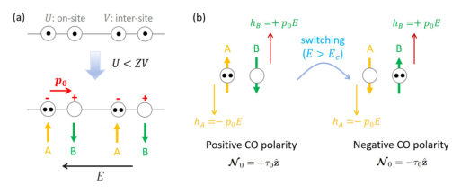
<figcaption class="paper-figure-caption"><b>Fig 1.</b> FIG. 1. (a) Charge order (CO) with alternating doubly occu- pied and empty sites in a half-filled extended Hubbard model with U &lt; ZV , in which an intracell electric dipole p0 emerges due to the accompanying inversion-symmetry breaking. (b) Switching of the CO polarity by an external electric field that couples to the intracell dipoles and thereby acts as a staggered field on the two pseudospin sublattices. Here, doubly occu- pied (empty) sites are represented by orange (green) pseu- dospin arrows, and the CO state corresponds to staggered pseudospin order on the A and B sublattices.</figcaption>
</figure>
<figure class="paper-figure-card">
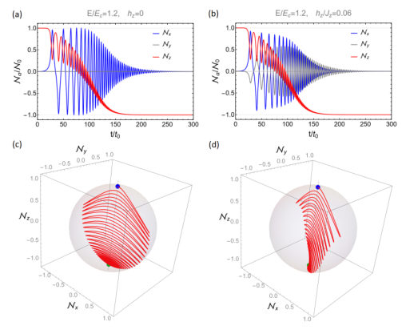
<figcaption class="paper-figure-caption"><b>Fig 2.</b> FIG. 2. Time evolution and trajectories of the charge- order vector N during electric-field-driven switching of the charge-order polarity at E/Ec = 1.2: (a),(c) hz = 0 and (b),(d) hz/Jz = 0.06. Here, time is measured in units of t0 = ℏ/(ZJzτ0), with J⊥/Jz = 0.3 and αG = 0.02. The ini- tial state is N 0 = τ0ˆz, corresponding to the positive-polarity CO state shown in Fig. 1.</figcaption>
</figure>
</div>

<p><strong>Summary.</strong> This work develops a pseudospin model for charge order, treating it as a dynamic variable rather than a static modulation. By deriving dynamics analogous to those in antiferromagnets, the authors show that an external electric field can coherently switch the charge-order polarity. This establishes a charge-sector analogue to spintronics, opening pathways for electrical control of charge states.</p>
<p><strong>Why it may be interesting.</strong> The direct analogy drawn between charge-pseudospin dynamics and well-established spin-order dynamics (spintronics) provides a powerful, transferable theoretical framework for understanding electrical control in charge-ordered materials.</p>
<details>
<summary>Detailed structure</summary>
<p><strong>Main problem.</strong> The paper addresses the lack of a microscopic framework describing the non-equilibrium dynamics and external control of charge order, contrasting with the view of charge order as static.</p>
<p><strong>Main result.</strong> It establishes the charge pseudospin as a dynamical degree of freedom, showing that an external electric field can drive a coherent reversal of the charge-order polarity above a critical threshold.</p>
<p><strong>Method.</strong> The authors derive an effective pseudospin model from the extended Hubbard model and analyze its dynamics using Landau-Lifshitz-Gilbert-like equations.</p>
<p><strong>Model / system.</strong> The system is modeled using the extended Hubbard model, which is mapped onto an effective pseudospin Hamiltonian. The dynamics are governed by pseudospin operators ($  au_i$) analogous to those in bipartite antiferromagnets.</p>
<p><strong>Key observables.</strong> Staggered pseudospin order (N), charge-order parameter ($N_z$), and the critical switching field ($E_c$).</p>
<p><strong>Important parameters / regimes.</strong> External electric field ($E$), doping/chemical potential ($h_z$), and coupling constants ($J_z, J_\perp$).</p>
<p><strong>Assumptions / limitations.</strong> The analysis relies on the strong charge-ordering regime and employs semiclassical mean-field dynamics approximations.</p>
<p><strong>Figures summary.</strong> Figure 1 illustrates the charge order and the switching of its polarity by an external electric field. Figure 2 shows the time evolution of the charge-order vector during field-driven switching.</p>
<p><strong>Paper structure.</strong> The paper progresses from deriving the effective pseudospin Hamiltonian from the extended Hubbard model, establishing the LLG-like dynamics, and finally analyzing how an external electric field drives coherent switching by destabilizing collective pseudospin excitations.</p>
</details>
<details>
<summary>Abstract</summary>
<p>Charge order is conventionally viewed as a static modulation of the electronic density, despite growing experimental capabilities to probe and manipulate its nonequilibrium evolution. In contrast to spin-ordered systems, a microscopic framework for charge-order dynamics and its control under external driving remains largely underdeveloped. Here, starting from an extended Hubbard model, we derive an effective pseudospin model in which the charge-ordered state maps onto staggered pseudospin order. The resulting charge-order dynamics is governed by Landau--Lifshitz--Gilbert-like equations for the pseudospins, closely analogous to those of a bipartite antiferromagnet. We show that an external electric field directly controls the staggered pseudospin order and, above a threshold field, drives coherent reversal of the charge-order polarity by destabilizing collective pseudospin excitations. Our results establish the charge pseudospin as a microscopic dynamical degree of freedom for coherent switching and control of charge order, providing a charge-sector analogue of the well-established framework for spin-order dynamics in spintronics.</p>
</details>
<p><sub><a href="#top">↑ back to top</a></sub></p>

<p><a id="paper-2608.30272"></a></p>
<h3 id="modular-annihilator-parent-hamiltonians-for-purified-gibbs-states-spectral-design-and-controlled-approximation"><a href="http://arxiv.org/abs/2608.30272v1">Modular-Annihilator Parent Hamiltonians for Purified Gibbs States: Spectral Design and Controlled Approximation</a></h3>
<p><strong>Authors:</strong> Changhao Yi, Jun Takahashi, Cunlu Zhou<br>
<strong>Type:</strong> theory · <strong>Category:</strong> statistical mechanics · <strong>PDF:</strong> <a href="https://arxiv.org/pdf/2608.30272v1">https://arxiv.org/pdf/2608.30272v1</a><br>
<strong>Analysis basis:</strong> full PDF text, analyzed in chunks
<strong>Topic relevance:</strong> <code>Keldysh / 2PI / non-Gaussian methods</code> <strong>1/5</strong> · <code>analog quantum simulation</code> <strong>1/5</strong> · <code>correlated / nonlocal dissipation</code> <strong>1/5</strong> · <code>driven-dissipative phase transition</code> <strong>1/5</strong> · <code>methods for driven-dissipative</code> <strong>1/5</strong></p>
<div class="figure-strip-hint">↔ Scroll figures horizontally</div>
<div class="paper-figures-scroll">
<figure class="paper-figure-card">
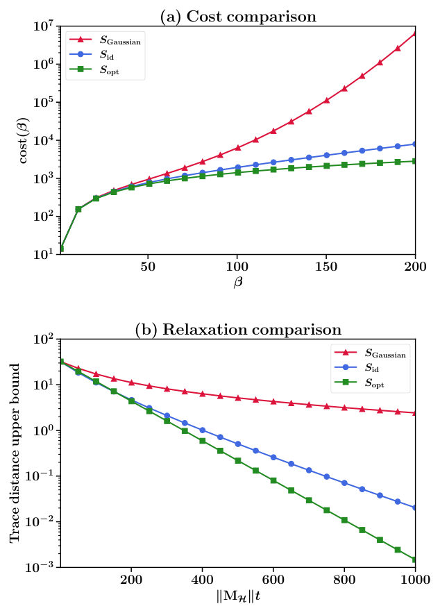
<figcaption class="paper-figure-caption"><b>Fig 1.</b> FIG. 1. The comparison between the three coefficient matrices, where the free-fermion model is generated by random coefficients and renormalization ∥h∥1 = 1. There are N = 100 modes in the model. In plot (a), the horizontal axis is the inverse temperature β ∈[1, 200]. The vertical axis is cost(β) defined in Eq. (88), which reflects the reduced query-cost proxy using SoS spectral amplification. In plot (b), we compare the relaxation from the maximally mixed state of the corresponding Lindbladian, and fix the inverse temperature to be β = 100. The horizontal axis is the evolution time multiplied by ∥MH∥, the vertical axis is the analytical upper bound of the trace distance derived in Eq. (61).</figcaption>
</figure>
<figure class="paper-figure-card">
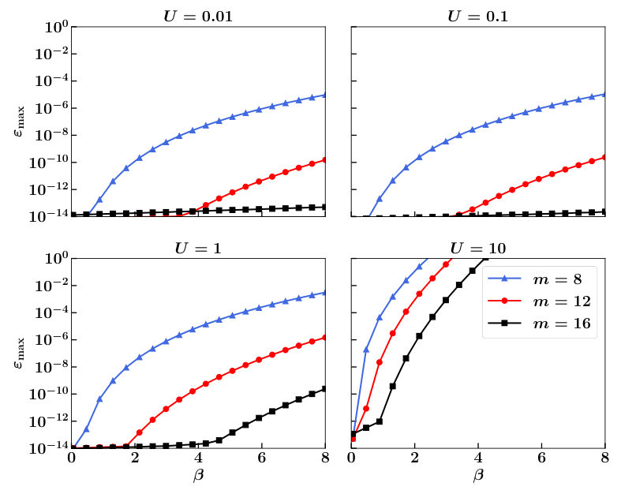
<figcaption class="paper-figure-caption"><b>Fig 2.</b> FIG. 2. The accuracy of approximate modular transformation of interacting fermionic model in Eq. (89) with system size N = 4 and interaction strength U = 10−2, 10−1, 1, 10. The horizontal axis corresponds to the inverse temperature β. The vertical axis corresponds to ϵmax in Eq. (91) for m = 8, 16, 24 separately. The set of generators is 1-local Pauli operators {Xn, Zn}N n=1.</figcaption>
</figure>
<figure class="paper-figure-card">
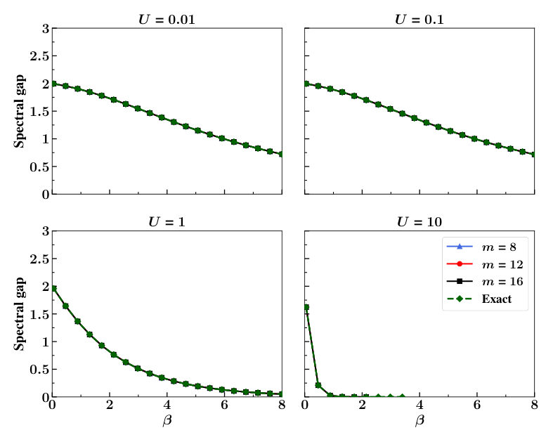
<figcaption class="paper-figure-caption"><b>Fig 3.</b> FIG. 3. Spectral gap of the exact parent Hamiltonian and Krylov approximated parent Hamiltonian with system size N = 4 and interaction strength U = 10−2, 10−1, 1, 10. The horizontal axis corresponds to the inverse temperature β. The vertical axis corresponds to the spectral gap of MH and eMH for m = 8, 16, 24 separately. The set of generators is 1-local Pauli operators {Xn, Zn}N n=1. We cut off the computation when the spectral gap of the Krylov approximated parent Hamiltonian at m = 24 is less than or equal to 10−8, which is considered as having degenerate ground space in the numerical sense. Note that the exact curve is visually indistinguishable from m = 24 curve over the displayed range.</figcaption>
</figure>
<figure class="paper-figure-card">
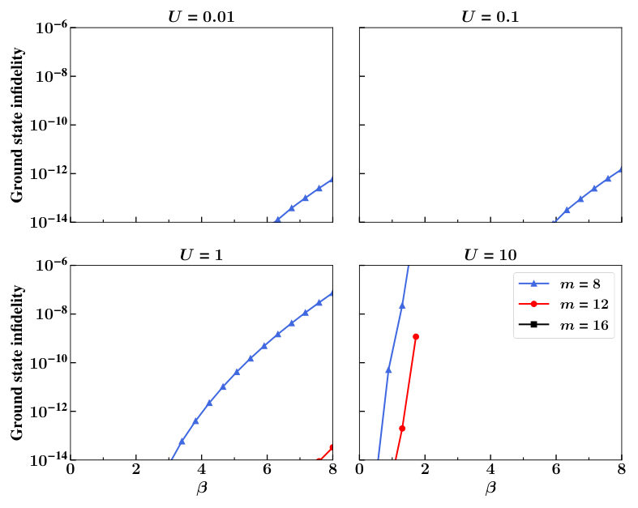
<figcaption class="paper-figure-caption"><b>Fig 4.</b> FIG. 4. Ground state fidelity between the ground state of the exact parent Hamiltonian and Krylov approximated parent Hamiltonian with system size N = 4 and interaction strength U = 10−2, 10−1, 1, 10. The horizontal axis corresponds to the inverse temperature β. The vertical axis corresponds to the fidelity between |ρ1/2 β ⟩and the ground state of eMH for m = 8, 16, 24 separately. The set of generators is 1-local Pauli operators {Xn, Zn}N n=1. We cut off the computation when the spectral gap of the Krylov approximated parent Hamiltonian at m = 24 is less than or equal to 10−8, which is considered as having degenerate ground space in the numerical sense.</figcaption>
</figure>
</div>

<p><strong>Summary.</strong> This paper introduces a novel, exact method using modular annihilators to construct parent Hamiltonians whose ground state corresponds to a purified Gibbs state. It achieves optimal spectral properties for free-fermion models and provides a systematic approximation scheme for complex interacting systems. This advances the theoretical understanding of how finite-temperature dynamics can be mapped onto ground-state problems.</p>
<p><strong>Why it may be interesting.</strong> This work provides rigorous, non-perturbative methods to connect thermal equilibrium states (Gibbs states) to ground-state physics via parent Hamiltonians, which is crucial for understanding open quantum systems dynamics.</p>
<details>
<summary>Detailed structure</summary>
<p><strong>Main problem.</strong> The paper develops an exact, finite Sum-of-Squares (SoS) construction for the parent Hamiltonians associated with purified Gibbs states, bypassing continuous time integrals.</p>
<p><strong>Main result.</strong> The modular-annihilator construction achieves the optimal relative spectral gap of 1 for the parent Hamiltonian, and the optimal free-fermion choice yields rapid mixing independent of inverse temperature.</p>
<p><strong>Method.</strong> The core method involves using modular annihilators derived from a finite set of Hermitian generators to construct the parent Hamiltonian $M_H$ such that the purified Gibbs state is its unique ground state.</p>
<p><strong>Model / system.</strong> The study focuses on purified Gibbs states ($
ho_eta$), which bridge finite-temperature physics and ground-state methods. The analysis covers free-fermion models (using Majorana operators) and general interacting systems.</p>
<p><strong>Key observables.</strong> Spectral gap of the parent Hamiltonian ($  ext{Gap}(M_H)$), mixing time, and the relative spectral gap $r(\{J_a\})$.</p>
<p><strong>Important parameters / regimes.</strong> Inverse temperature ($eta$), interaction strength, and the dimension of the Krylov approximation.</p>
<p><strong>Assumptions / limitations.</strong> The construction assumes the algebra generated by the initial operators is unital and irreducible for the ground state to be unique. Interacting systems require the Krylov-Lanczos approximation.</p>
<p><strong>Paper structure.</strong> The paper builds from the general concept of purifying Gibbs states to the specific construction using modular annihilators, detailing the free-fermion case, and finally addressing the approximation techniques for general interacting systems.</p>
</details>
<details>
<summary>Abstract</summary>
<p>Purified Gibbs states provide a bridge between finite-temperature physics, dissipative dynamics, and ground-state methods. In this work, we study the exact finite sum-of-squares (SoS) construction of their parent Hamiltonians and the associated Lindbladian based on modular annihilators. Given a finite set of Hermitian generators, the corresponding modular annihilators yield a frustration-free SoS representation without continuous time integrals or an explicit decomposition into Bohr-frequency sectors. The purified Gibbs state remains a common zero mode while the freedom to choose and combine the generators can be used to optimize the spectral properties of the parent Hamiltonian. For free-fermion Hamiltonians, modular transformations act linearly on Majorana operators, leading to an analytically solvable family of parent Hamiltonians parameterized by a real symmetric coefficient matrix \(S\). For the scalar-functional subclass $S=f(h)$, we show that, at fixed operator norm, the choice $S_{\mathrm{opt}}\propto 1/\sqrt{\cosh(2βh)}$ has mixing time upper bound $2\log(2N/ε)$ for any $β$, which exhibits rapid mixing and is irrelevant to the inverse temperature $β$. For interacting systems, where the modularly dressed generators are not available in closed form, we introduce a Krylov--Lanczos approximation scheme and bound the resulting ground-state error in terms of the modular-approximation error and the parent-Hamiltonian gap. Numerical results illustrate the free-fermion spectral advantage and show how the accuracy of the interacting construction depends on temperature, interaction strength, and Krylov dimension.</p>
</details>
<p><sub><a href="#top">↑ back to top</a></sub></p>

<p><a id="paper-2608.29728"></a></p>
<h3 id="active-embracement-enables-autonomous-tweezing-in-active-star-polymers"><a href="http://arxiv.org/abs/2608.29728v1">Active embracement enables autonomous tweezing in active star polymers</a></h3>
<p><strong>Authors:</strong> Marco Musacchio, Davide Breoni, Iman Abdoli, Luca Tubiana, Hartmut Löwen, Lorenzo Caprini<br>
<strong>Type:</strong> both · <strong>Category:</strong> statistical mechanics · <strong>PDF:</strong> <a href="https://arxiv.org/pdf/2608.29728v1">https://arxiv.org/pdf/2608.29728v1</a><br>
<strong>Analysis basis:</strong> full PDF text, analyzed in chunks
<strong>Topic relevance:</strong> <code>Frenkel-Kontorova</code> <strong>1/5</strong> · <code>driven-dissipative phase transition</code> <strong>1/5</strong> · <code>methods for driven-dissipative</code> <strong>1/5</strong> · <code>non-equilibrium universality</code> <strong>1/5</strong></p>
<div class="figure-strip-hint">↔ Scroll figures horizontally</div>
<div class="paper-figures-scroll">
<figure class="paper-figure-card">
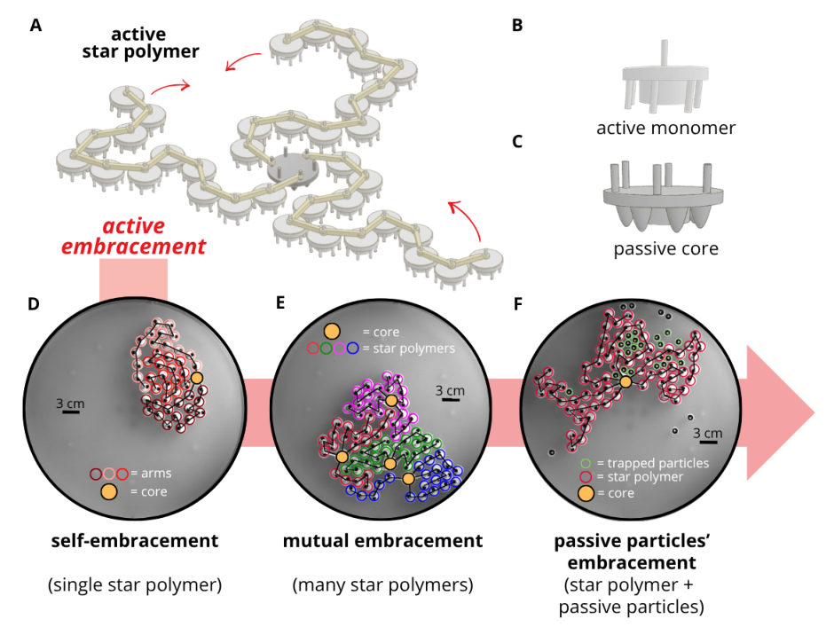
<figcaption class="paper-figure-caption"><b>Fig 1.</b> FIG. 1. Active embracement. A Schematic illustration of an active star polymer composed of a passive core (large dark grey particle) and arms made of active monomers (small light grey particles). B,C Side views of the 3D-printed active monomer (B) and passive core (C). Red arrows indicate different manifestations of active embracement, namely the tendency of active star polymers to “embrace” surrounding objects, including themselves (self-embracement), other star polymers (mutual embrace- ment), and passive objects (embracement of passive particles). D–F Experimental snapshots showing: D self-embracement of a single active star polymer, with monomers belonging to different arms shown in...</figcaption>
</figure>
<figure class="paper-figure-card">
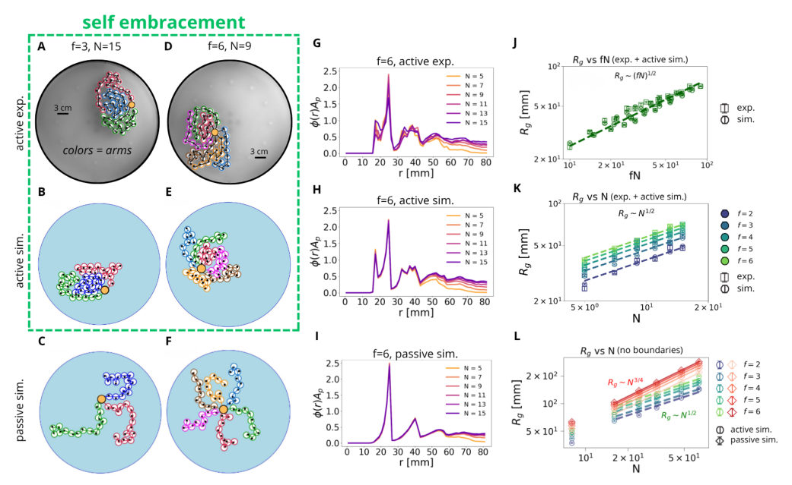
<figcaption class="paper-figure-caption"><b>Fig 2.</b> FIG. 2. Self-embracement A,D Experimental snapshots of a single star-polymer with f = 3, N = 15 (A) and f = 6, N = 9 (D). b,e Simulation snapshots of active star-polymers for f = 3, N = 15 (B) and f = 6, N = 9 (E). C,F Simulations snapshots of passive star-polymers for f = 3, N = 15 (C) and f = 6, N = 9 (F). In all snapshots, the passive core is colored orange, while the other colors are used to distinguish monomers belonging to different arms, and the scale bar corresponds to 3 cm. Active star polymers spontaneously adopt self-embraced configurations, whereas passive star polymers remain in open configurations. G–I Radial distribution functions, ϕ(r), of the monomer positions with respect...</figcaption>
</figure>
<figure class="paper-figure-card">
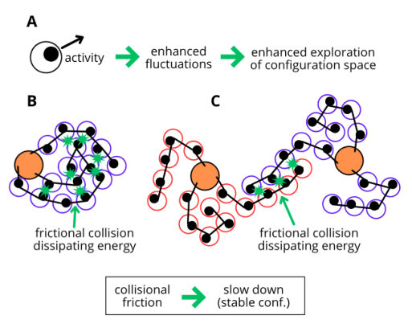
<figcaption class="paper-figure-caption"><b>Fig 3.</b> FIG. 3. Active embracement mechanism. A Self- propulsion, whose direction is indicated by the black off- centered dot on each monomer, enhances fluctuations and promotes the exploration of the configuration space of the star polymer. B Illustration of a typical collapsed configura- tion for a single active star polymer whose active monomers are colored in blue, in which the arms are hugging each other around the passive core. C Illustration of a typical con- figuration involving two active star polymers, whose active monomers are colored blue and red, respectively. Configu- rations involving multiple monomer–monomer contacts are more stable because collisions between contacting monomers...</figcaption>
</figure>
<figure class="paper-figure-card">
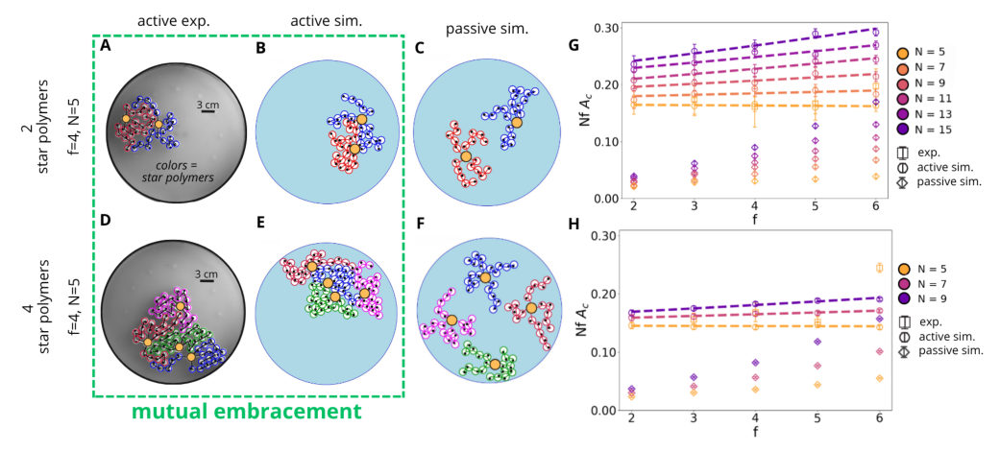
<figcaption class="paper-figure-caption"><b>Fig 4.</b> FIG. 4. Mutual embracement. A,D Experimental snapshots of two (A) and four (D) star polymers with number of arms f = 4 and number of monomers per arm N = 5. B,C,E,F Simulation snapshots of two (B) and four (E) active star polymers and two (C) and four (F) passive star polymers, with f = 4 and N = 5 to match experiments. The passive core of each star polymer is colored orange, while all monomers belonging to the same polymer have the same color. In all snapshots, the scale bar corresponds to 3 cm. In the active case, different star polymers cluster and remain in contact through mutual embracement, whereas in the passive case they effectively repel each other. G,H Contact area, Ac, multiplied...</figcaption>
</figure>
<figure class="paper-figure-card">
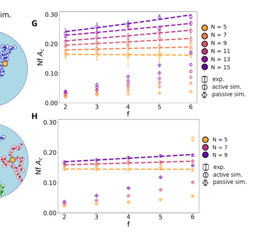
<figcaption class="paper-figure-caption"><b>Fig 5.</b> Figure 4G,H reveals a clear quantitative distinction be- tween active and passive systems. The contact area mea- sured for active star polymers (squares for experiments and open circles for simulations) is consistently larger than that of passive star polymers (diamonds), both for systems comprising two and four interacting polymers. These higher values provide direct evidence of activity-</figcaption>
</figure>
</div>

<p><strong>Summary.</strong> This paper investigates 'active embracement' in star polymers, demonstrating that internal self-propulsion drives the system into a collapsed, 'hugging' state unattainable by passive systems. By combining experiments with detailed simulations incorporating contact and rolling friction, the authors show this mechanism allows the polymers to function as autonomous tweezers for capturing external particles. This offers a versatile design principle for smart, self-assembling materials.</p>
<p><strong>Why it may be interesting.</strong> The work provides a physical blueprint for designing active matter systems whose non-equilibrium dynamics can be harnessed for controlled, localized interactions, bridging concepts from active matter physics to potential applications in quantum sensing or manipulation.</p>
<details>
<summary>Detailed structure</summary>
<p><strong>Main problem.</strong> The challenge is achieving autonomous structural reconfiguration in artificial active matter, moving beyond simple shape changes to localized, functional interactions like targeted cargo capture.</p>
<p><strong>Main result.</strong> Active embracement, a non-equilibrium phenomenon, allows star polymers to self-collapse, mutually embrace, and autonomously capture passive particles, functioning as molecular tweezers.</p>
<p><strong>Method.</strong> The study combines polymer experiments using 3D-printed vibrobots with detailed simulations using stochastic equations to model particle dynamics.</p>
<p><strong>Model / system.</strong> The system consists of active star polymers, modeled as a core connected to self-propelled monomeric arms. Dynamics incorporate Brownian motion, inertial effects, and various friction forces (contact and rolling).</p>
<p><strong>Key observables.</strong> Radius of Gyration (Rg), Radial Distribution Function (phi(r)), and the transition between open/dispersed and collapsed/embraced states.</p>
<p><strong>Important parameters / regimes.</strong> Self-propulsion force (activity), friction coefficients (contact and rolling), and particle density/number of monomers (N).</p>
<p><strong>Assumptions / limitations.</strong> The model relies on specific parameter choices calibrated to match experimental observations, particularly regarding the role of contact and rolling friction in stabilizing collapsed states.</p>
<p><strong>Figures summary.</strong> Figures illustrate the transition from open to collapsed states (self-embracement) in active vs. passive polymers, showing Rg scaling differences and the mechanism involving friction.</p>
<p><strong>Paper structure.</strong> The paper first introduces the concept of active embracement, then details the simulation methodology comparing active vs. passive systems, focusing on the role of friction, and finally demonstrates the functional capability of the resulting 'tweezers' through particle capture.</p>
</details>
<details>
<summary>Abstract</summary>
<p>The capacity for autonomous structural reconfiguration is a defining trait of living systems, yet it remains elusive in artificial active matter. Here, we report the discovery of active embracement, a non-equilibrium phenomenon where active star polymers, comprising a central core and self-propelled monomeric arms, transition from open configurations to tightly collapsed, ``hugging'' states. By combining polymer experiments using connected vibrobots with simulations, we demonstrate that internal self-propulsion fundamentally overrides the steric repulsion that keeps passive polymers dispersed. This active drive enables a suite of behaviors unattainable in equilibrium systems: individual star polymers undergo a globular-like self-collapse, multiple star polymers mutually intertwine and mutually embrace, and can spontaneously embrace and capture surrounding passive particles. Our findings reveal that active embracement is a distinct kinetic phase that allows star polymers to function as autonomous tweezers. By bridging the gap between macroscopic robotic collectives and microscopic polymer physics, this work provides a versatile blueprint for the design of smart materials capable of targeted cargo capture and self-directed assembly in complex environments.</p>
</details>
<p><sub><a href="#top">↑ back to top</a></sub></p>

<p><a id="paper-2608.29116"></a></p>
<h3 id="electronic-phase-separation-and-emergence-of-a-nondimerized-insulating-phase-in-vomath969math-math970math-ultrathin-films"><a href="http://arxiv.org/abs/2608.29116v1">Electronic phase separation and emergence of a nondimerized insulating phase in VO$_2$ $(110)_{\mathit{R}}$ ultrathin films</a></h3>
<p><strong>Authors:</strong> S. Inoue, D. Shiga, R. Hayasaka, K. Ozawa, A. F. Santander-Syro, H. Kumigashira<br>
<strong>Type:</strong> experiment · <strong>Category:</strong> strongly correlated electrons · <strong>PDF:</strong> <a href="https://arxiv.org/pdf/2608.29116v1">https://arxiv.org/pdf/2608.29116v1</a><br>
<strong>Analysis basis:</strong> full PDF text, analyzed in chunks
<strong>Topic relevance:</strong> <code>Frenkel-Kontorova</code> <strong>1/5</strong> · <code>analog quantum simulation</code> <strong>1/5</strong> · <code>driven-dissipative phase transition</code> <strong>1/5</strong></p>
<div class="figure-strip-hint">↔ Scroll figures horizontally</div>
<div class="paper-figures-scroll">
<figure class="paper-figure-card">
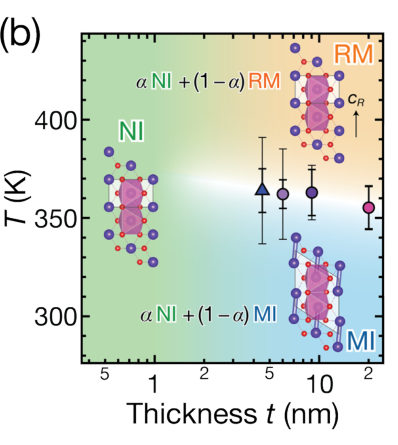
<figcaption class="paper-figure-caption"><b>Fig 1.</b> FIG. 1. (a) Temperature dependence of r for VO2/TiO2 (110) films with t ranging from 1 to 20</figcaption>
</figure>
<figure class="paper-figure-card">
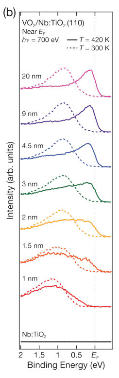
<figcaption class="paper-figure-caption"><b>Fig 2.</b> FIG. 2. (a) Valence-band spectra of VO2/Nb:TiO2 (110) ultrathin films with different t, measured</figcaption>
</figure>
<figure class="paper-figure-card">
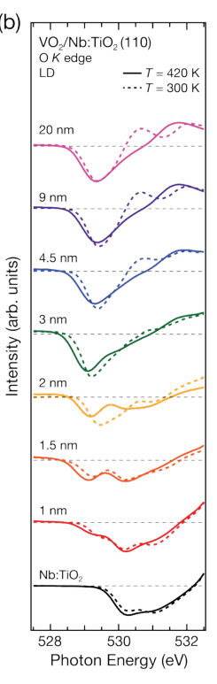
<figcaption class="paper-figure-caption"><b>Fig 3.</b> FIG. 3. (a) Thickness dependence of O K-edge XAS spectra of VO2/Nb:TiO2 (110) ultrathin films</figcaption>
</figure>
<figure class="paper-figure-card">
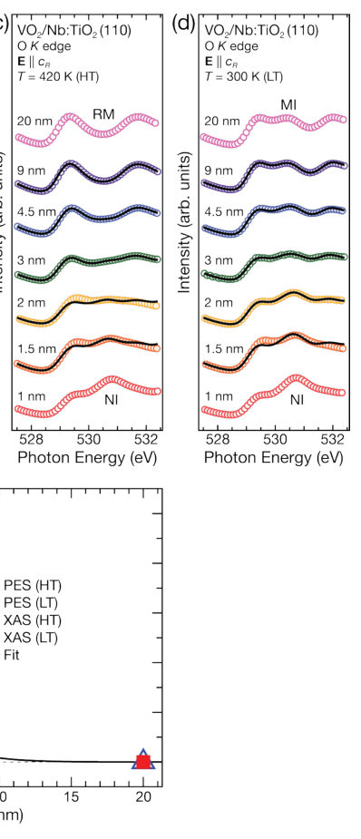
<figcaption class="paper-figure-caption"><b>Fig 4.</b> FIG. 4. Thickness dependence of valence-band spectra [(a) HT; (b) LT] and O K-edge XAS</figcaption>
</figure>
</div>

<p><strong>Summary.</strong> This experimental study investigates how reducing the thickness of $   ext{VO}_2$ films affects its electronic phase transition. Using advanced spectroscopy, the authors found that the system develops a nondimerized insulating phase driven by enhanced Mott instability, even when the crystal structure suggests otherwise. This work highlights that the geometric orientation of the crystal lattice dictates the spatial evolution of electronic phase separation in these strongly correlated materials.</p>
<p><strong>Why it may be interesting.</strong> The work directly addresses how dimensionality and strain mediate phase transitions in correlated oxides, providing experimental evidence for Mott instability enhancement in confined geometries, which is relevant to designing novel correlated quantum materials.</p>
<details>
<summary>Detailed structure</summary>
<p><strong>Main problem.</strong> The study investigates the thickness dependence of the electronic structure and V-V dimerization in $ ext{VO}<em ext_R="ext{R">2 (110)</em>$ ultrathin films, particularly how reduced dimensionality affects the Mott-Peierls transition.}</p>
<p><strong>Main result.</strong> The emergence of a nondimerized insulating (NI) phase is driven by the enhancement of Mott instability due to reduced dimensionality, and this phase-separation behavior is dictated by the geometric orientation of the V-V chains.</p>
<p><strong>Method.</strong> The research employed in situ photoemission spectroscopy (PES) and x-ray absorption spectroscopy (XAS) to probe electronic structure and V-V dimerization across varying film thicknesses.</p>
<p><strong>Model / system.</strong> The physical system is $    ext{VO}_2$ (Vanadium dioxide) grown as epitaxial ultrathin films on $   ext{TiO}_2 (110)$ substrates. The material is a strongly correlated oxide known for its temperature-driven metal-insulator transition.</p>
<p><strong>Key observables.</strong> Electronic structure (PES/XAS), V-V dimerization (O K-edge XAS), electrical resistivity ($
ho$) vs. Temperature ($T$), and the fraction of the nondimerized insulating (NI) phase.</p>
<p><strong>Important parameters / regimes.</strong> Film thickness ($t$), temperature ($T$), and the critical thickness ($t_c = 2.2 	ext{ nm}$) marking the transition to the NI phase.</p>
<p><strong>Assumptions / limitations.</strong> The study assumes that the $ ext{VO}<em ext_R="ext{R">2 (110)</em>$ orientation minimizes direct geometric constraints on V-V dimerization, allowing the investigation of intrinsic Mott instability effects.}</p>
<p><strong>Figures summary.</strong> Figures show the temperature dependence of transport properties ($
ho(T)$) and spectroscopic data (PES/XAS) revealing the persistence of MIT spectral changes down to 1.5 nm, and the appearance of the NI phase at 1 nm.</p>
<p><strong>Paper structure.</strong> The paper systematically measures the electronic structure and dimerization as a function of film thickness, comparing the results to known behavior in other orientations ($  ext{VO}<em ext_R="ext{R">2 (001)</em>$) to deduce the underlying physical mechanism driving the phase transition.}</p>
</details>
<details>
<summary>Abstract</summary>
<p>Using in situ photoemission spectroscopy and x-ray absorption spectroscopy, we investigated the thickness dependence of the electronic structure and V-V dimerization in VO$_2$/TiO$_2$ (110) ultrathin films, in which the one-dimensional V-V chains along the $c_{\mathit{R}}$ axis lie in the film plane. In VO$_2$ $(110)_{\mathit{R}}$ films, the reduction in dimensionality along the surface-normal direction is not expected to impose a geometric constraint on V-V dimerization, unlike in VO$_2$ $(001)_{\mathit{R}}$ films. Nevertheless, the characteristic spectral changes associated with the temperature-driven metal-insulator transition observed in thick films persist down to 1.5 nm, whereas at 1 nm an insulating electronic phase is observed without V-V dimerization. This behavior is highly similar to that reported for VO$_2$ $(001)_{\mathit{R}}$, suggesting that the enhancement of Mott instability resulting from reduced dimensionality is a common and essential driving force for the emergence of the nondimerized insulating phase in VO$_2$ ultrathin films. Meanwhile, unlike in VO$_2$ $(001)_{\mathit{R}}$, the nondimerized insulating phase in VO$_2$ $(110)_{\mathit{R}}$ coexists with the phase exhibiting the temperature-driven metal-insulator transition. Its fraction increases exponentially with decreasing thickness and becomes dominant at 1 nm. The corresponding effective critical thickness is estimated to be 2.2 nm. These results imply that the geometric orientation of the V-V chains dictates the spatial evolution of electronic phase separation via strain-mediated phase competition.</p>
</details>
<p><sub><a href="#top">↑ back to top</a></sub></p>

<p><a id="paper-2608.28946"></a></p>
<h3 id="on-the-entropy-of-a-pseudo-density-matrix"><a href="http://arxiv.org/abs/2608.28946v1">On the entropy of a pseudo-density matrix</a></h3>
<p><strong>Authors:</strong> James Fullwood, Boyu Yang<br>
<strong>Type:</strong> theory · <strong>Category:</strong> quantum information and computing · <strong>PDF:</strong> <a href="https://arxiv.org/pdf/2608.28946v1">https://arxiv.org/pdf/2608.28946v1</a><br>
<strong>Analysis basis:</strong> full PDF text, analyzed in chunks
<strong>Topic relevance:</strong> <code>correlated / nonlocal dissipation</code> <strong>1/5</strong> · <code>driven-dissipative phase transition</code> <strong>1/5</strong> · <code>quantum measurements</code> <strong>1/5</strong></p>
<div class="figure-strip-hint">↔ Scroll figures horizontally</div>
<div class="paper-figures-scroll">
<figure class="paper-figure-card">
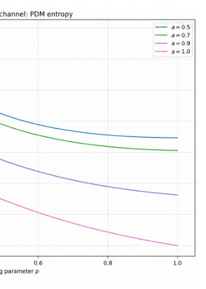
<figcaption class="paper-figure-caption"><b>Fig 1.</b> Figure 1: The PDM entropy S(Dp ⋆ρa) for the qubit depolarizing channel, where ρa = a |0⟩⟨0| + (1 −a) |1⟩⟨1|, for a = 0.5, 0.7, 0.9, 1. The entropy is nonincreasing in p, in agreement with the proposition above. The marked points indicate the values of p at which Dp ⋆ρa acquires a zero eigenvalue.</figcaption>
</figure>
<figure class="paper-figure-card">
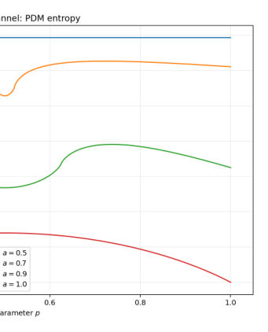
<figcaption class="paper-figure-caption"><b>Fig 2.</b> Figure 2: The PDM entropy S(Bp ⋆ρa) for the qubit bit-flip channel, where ρa = a |0⟩⟨0| + (1 −a) |1⟩⟨1|, for a = 0.5, 0.7, 0.9, 1. The entropy is symmetric about p = 1/2 and remains between 0 and log 2.</figcaption>
</figure>
<figure class="paper-figure-card">
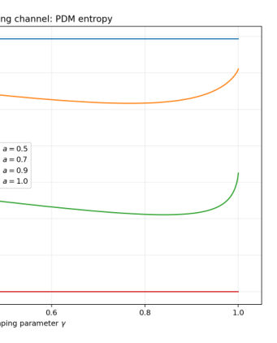
<figcaption class="paper-figure-caption"><b>Fig 3.</b> Figure 3: The PDM entropy S(Aγ ⋆ρa) for the qubit amplitude-damping channel, where ρa = a |0⟩⟨0| + (1 −a) |1⟩⟨1|, for a = 0.5, 0.7, 0.9, 1. The endpoint values satisfy S(A0 ⋆ρa) = S(A1 ⋆ρa) = S(ρa), while S(Aγ ⋆12/2) = log 2 for every γ ∈[0, 1].</figcaption>
</figure>
</div>

<p><strong>Summary.</strong> This paper develops a unique, mathematically rigorous extension of the von Neumann entropy functional to pseudo-density matrices (PDMs), which are necessary for describing quantum systems with temporal correlations. By using an axiomatic approach, the authors define this generalized entropy and demonstrate its physical consistency by analyzing its behavior for various quantum channels acting on qubits.</p>
<p><strong>Why it may be interesting.</strong> This work provides a rigorous mathematical tool (the PDM entropy) to quantify information loss and correlations in open quantum systems evolving over time, which is crucial for understanding quantum dynamics beyond simple Markovian assumptions.</p>
<details>
<summary>Detailed structure</summary>
<p><strong>Main problem.</strong> The core problem is extending the von Neumann entropy, which requires positive operators, to pseudo-density matrices (PDMs) that can possess negative eigenvalues due to encoding temporal correlations.</p>
<p><strong>Main result.</strong> The authors prove the existence of a unique extension of the von Neumann entropy functional to PDMs satisfying key axioms (unitary invariance and strong additivity for affine combinations). This unique extension is shown to be subadditive for single qubit dynamics.</p>
<p><strong>Method.</strong> The work employs an axiomatic approach, analogous to defining Shannon entropy, to derive the unique functional form for the entropy of PDMs.</p>
<p><strong>Model / system.</strong> The system involves PDMs, which extend the density operator formalism to the spatiotemporal domain, particularly useful for describing quantum dynamics between sequential measurements on qubits.</p>
<p><strong>Key observables.</strong> The primary observable is the generalized entropy functional $S(\cdot)$ defined for the PDM, and its behavior under various quantum channels (e.g., depolarizing, bit-flip).</p>
<p><strong>Important parameters / regimes.</strong> The analysis involves parameters characterizing quantum channels, such as the depolarizing parameter $p$ or damping parameter $\gamma$, and the initial state preparation parameter $a$.</p>
<p><strong>Assumptions / limitations.</strong> The derivation relies on assuming the functional must satisfy unitary invariance and strong additivity with respect to affine combinations within the eigenvalue range $[-1, 1]$.</p>
<p><strong>Figures summary.</strong> The figures illustrate the entropy $S(D_p \star 
ho_a)$ for the qubit depolarizing channel, showing non-increasing behavior in $p$, and confirm symmetries and bounds for other channels like bit-flip and amplitude-damping.</p>
<p><strong>Paper structure.</strong> The paper first establishes the mathematical necessity of extending entropy to PDMs, then uses an axiomatic framework to prove the uniqueness of the extension, and finally validates this extension by analyzing its behavior for specific physical models and quantum channels.</p>
</details>
<details>
<summary>Abstract</summary>
<p>The pseudo-density matrix (PDM) formalism naturally extends the notion of density operator to the spatiotemporal domain. While PDMs are Hermitian and of unit trace, they admit negative eigenvalues when encoding temporal correlations unattainable for spacelike separated systems. Consequently, there have been various approaches to extending the von~Neumann entropy---which is only defined for positive operators---to PDMs. Here, we prove that there exists a unique extension of the von~Neumann entropy functional to Hermitian matrices of unit trace satisfying two simple assumptions: unitary invariance and strong additivity with respect to affine combinations within the interval $[-1,1]$, which we prove contains the eigenvalues of a PDM. We also prove that this unique extension of von~Neumann entropy to PDMs is subadditive for single qubit dynamics, and we analyze its behavior in a number of examples.</p>
</details>
<p><sub><a href="#top">↑ back to top</a></sub></p>

<p><a id="paper-2608.30282"></a></p>
<h3 id="best-annealing-path-of-quantum-annealing-via-efficient-adiabatic-phase-transition"><a href="http://arxiv.org/abs/2608.30282v1">Best Annealing Path of Quantum Annealing via Efficient Adiabatic Phase Transition</a></h3>
<p><strong>Authors:</strong> Kiyotaka Murashima<br>
<strong>Type:</strong> theory · <strong>Category:</strong> numerical methods · <strong>PDF:</strong> <a href="https://arxiv.org/pdf/2608.30282v1">https://arxiv.org/pdf/2608.30282v1</a><br>
<strong>Analysis basis:</strong> full PDF text, analyzed in chunks
<strong>Topic relevance:</strong> <code>analog quantum simulation</code> <strong>1/5</strong> · <code>methods for driven-dissipative</code> <strong>1/5</strong></p>
<div class="figure-strip-hint">↔ Scroll figures horizontally</div>
<div class="paper-figures-scroll">
<figure class="paper-figure-card">
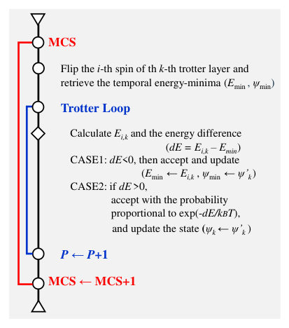
<figcaption class="paper-figure-caption"><b>Fig 1.</b> Fig. 2. A flowchart of the trotter layer parallelization algorithm is shown. The conventional SQA has to sum up all energies over the trotter layer, so that it prevents quick convergence. The new algorithm skips it, and all trotter layers will mimic the spin configuration that has the temporal minimum energy. Sharing such information of the energy, each of the P trotter layers keeps searching for its global energy minimum state. The quantum effect like the tunneling are maintained and it causes quick convergence.</figcaption>
</figure>
<figure class="paper-figure-card">
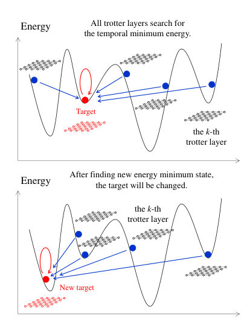
<figcaption class="paper-figure-caption"><b>Fig 2.</b> Fig. 1. Schematic picture is shown how to search for minimum energy. All P trotter layers update their spin configuration independently, although the conventional SQA has to satisfy a periodic boundary condition. The transition probability is tuned by Metropolis rules, and the second term of the equation (6) works as a penalty term when the i-th spin is not in the same direction as the temporal energy minimum state. Once a new energy minimum state is found, the target state will be changed quickly.</figcaption>
</figure>
<figure class="paper-figure-card">
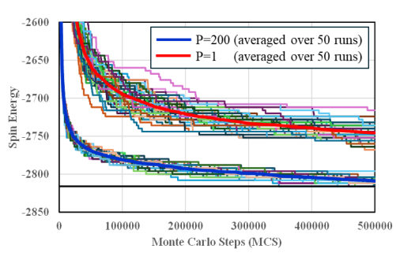
<figcaption class="paper-figure-caption"><b>Fig 3.</b> Fig. 4. The graph proves that the trotter layer parallelization inspired by Quantum Monte Carlo (QMC) can work well. The trotter layer settles into the global-minima, while mimicking the temporal energy minimum state. The convergence curve is averaged over 50 times runs. Hereinafter, only the averaged results are shown.</figcaption>
</figure>
<figure class="paper-figure-card">
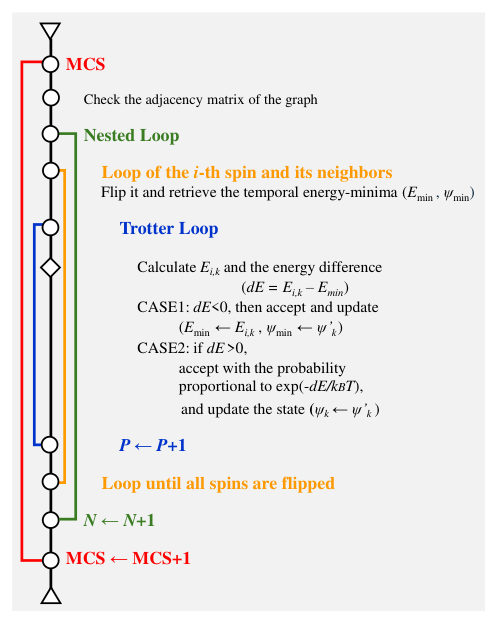
<figcaption class="paper-figure-caption"><b>Fig 4.</b> Fig. 3. A flowchart of NSA is shown. Spins are selected among the group determined by the adjacency matrix of the system and the spin is flipped one by one on each trotter layer. Compared to the algorithm in Fig.2, the green and the yellow loops are added. By repeating such nested loops per MCS, the neighboring spin group reaches its local-minima.</figcaption>
</figure>
<figure class="paper-figure-card">
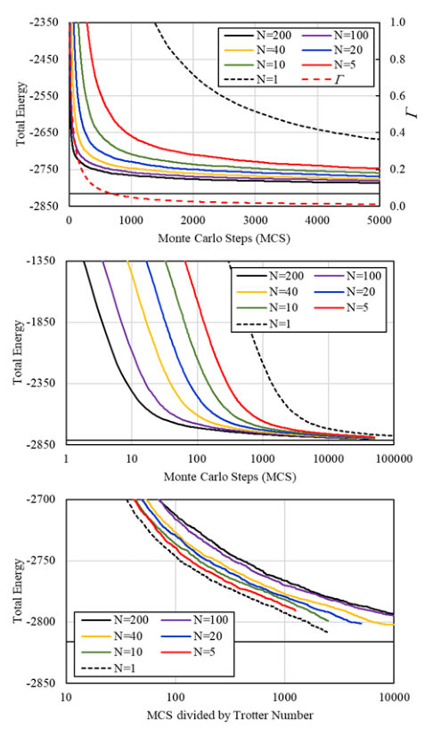
<figcaption class="paper-figure-caption"><b>Fig 5.</b> Fig. 5. The graphs prove that the partial optimization inspired by causality can accelerate SQA without any additional hardware. As N×P was kept the same value, the smaller MCS was needed, the larger computational speedup was achieved. And because G34 is a sparse graph, the dependency on the trotter number N is monotonic.</figcaption>
</figure>
</div>

<p><strong>Summary.</strong> This paper proposes Nested Simulated Annealing (NSA) as an efficient method to optimize the annealing path in Quantum Annealing simulations. By treating spins as continuous variables, the authors relate convergence speed directly to the minimization of local-maxima in the energy landscape. This allows for the selection of optimal parameters to achieve faster, resource-efficient adiabatic phase transitions on classical computers.</p>
<p><strong>Why it may be interesting.</strong> The work provides a sophisticated classical simulation technique (NSA) to navigate complex quantum energy landscapes, which is highly relevant for understanding the dynamics of open quantum systems and optimizing quantum computation protocols.</p>
<details>
<summary>Detailed structure</summary>
<p><strong>Main problem.</strong> The primary goal is to improve Quantum Annealing (QA) by finding the optimal annealing path to accelerate convergence and reduce computational resources.</p>
<p><strong>Main result.</strong> The paper shows that selecting parameters appropriately in Nested Simulated Annealing (NSA) can induce an optimal adiabatic phase transition, leading to faster convergence by minimizing local-maxima in the energy landscape.</p>
<p><strong>Method.</strong> The authors employ Nested Simulated Annealing (NSA), inspired by Quantum Monte Carlo (QMC), and treat spin variables as continuous to derive energy formulas for both the problem and perturbation Hamiltonians.</p>
<p><strong>Model / system.</strong> The system is modeled using the Ising spin model Hamiltonian, $H = -(\sum_{i<j} J_{ij}\hat{\sigma}_i^z\hat{\sigma}_j^z - \sum_i \Gamma \hat{\sigma}_i^x)$, and the simulation involves calculating the partition function $Z$ via Trotter expansion.</p>
<p><strong>Key observables.</strong> Convergence speed, total energy ($E_z + E_x$), and the location/magnitude of local-maxima in the energy landscape.</p>
<p><strong>Important parameters / regimes.</strong> The number of nested loops ($N$) in the NSA process, which dictates the annealing path parameters.</p>
<p><strong>Assumptions / limitations.</strong> The continuous variable derivation relies on approximations for the wavefunction evolution, and the binary spin algorithm skips steps from rigorous quantum mechanics.</p>
<p><strong>Figures summary.</strong> Figures illustrate the NSA flowcharts, compare convergence curves of the new algorithm against standard SA, and show the dependency of the energy landscape on the nested loop parameter $N$.</p>
<p><strong>Paper structure.</strong> The paper first establishes the QA problem and the limitations of current methods. It then develops the mathematical framework using continuous spin variables and Trotter layer parallelization. The core contribution is the proposal and analysis of NSA, demonstrating how parameter selection minimizes local-maxima to achieve optimal adiabatic transitions.</p>
</details>
<details>
<summary>Abstract</summary>
<p>Quantum Annealing (QA) has already put into practical use and considered useful for solving many social issues, such as reduction of traffic congestion and delivery optimization. But in QA, when the energy difference between the ground state and the first excited state is small, the transition probability between them increases. Therefore, in order to decrease the transition, QA has to be performed at extremely low temperatures. To simulate the situation, it has the problem in that it takes much time. Many studies are underway to accelerate QA theoretically, one of which is to incorporate non-stoquastic Hamiltonian. On the other hand, I proposed Nested Simulated Annealing (NSA) inspired by Quantum Monte Carlo (QMC). I showed the computational speedup could be achieved dramatically, by considering the idea that the effect of flipping a spin preferentially influenced the spins directly interacting with it. Although NSA was based on such classical concept of causality, the hybrid computation both quantum and classical approach worked well. In this paper, in order to discuss the relationship between NSA and non-stoquastic Hamiltonian like XX-interaction, the spins are treated as continuous variables. I derive the formula to calculate the total energy in both with a problem Hamiltonian and the perturbation Hamiltonian induced by a transverse electromagnetic field. And I will show a clear relationship between local-maxima and the convergence speed when calculating it with the binary spin. More precisely, the annealing path with the smallest local-maxima converges fast, even though it consumes fewer computational resources. Therefore, it is possible to induce an optimal adiabatic phase transition by selecting NSA parameters appropriately. This paper shows an effective method to choose the parameters when simulating QMC on a classical computer.</p>
</details>
<p><sub><a href="#top">↑ back to top</a></sub></p>

<p><a id="paper-2608.30746"></a></p>
<h3 id="hartree-fragmentation-and-long-range-pair-networks-in-aperiodic-chains"><a href="http://arxiv.org/abs/2608.30746v1">Hartree Fragmentation and Long-Range Pair Networks in Aperiodic Chains</a></h3>
<p><strong>Authors:</strong> Yogeshwar Prasad<br>
<strong>Type:</strong> theory · <strong>Category:</strong> disordered systems and neural networks · <strong>PDF:</strong> <a href="https://arxiv.org/pdf/2608.30746v1">https://arxiv.org/pdf/2608.30746v1</a><br>
<strong>Analysis basis:</strong> full PDF text, analyzed in chunks
<strong>Topic relevance:</strong> <code>Frenkel-Kontorova</code> <strong>1/5</strong> · <code>analog quantum simulation</code> <strong>1/5</strong></p>
<div class="figure-strip-hint">↔ Scroll figures horizontally</div>
<div class="paper-figures-scroll">
<figure class="paper-figure-card">
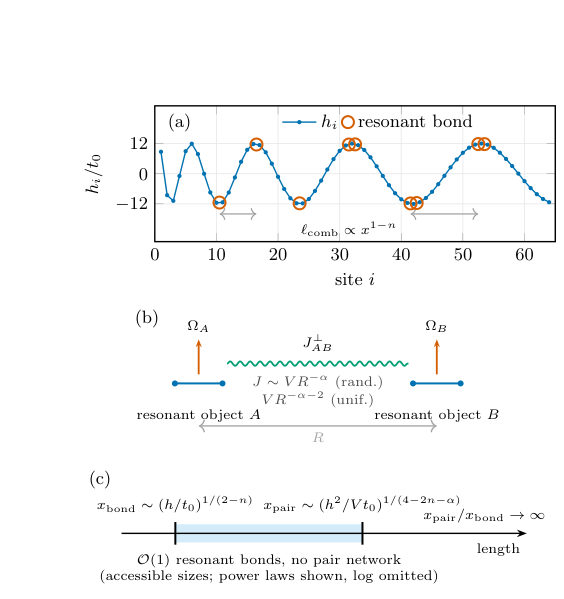
<figcaption class="paper-figure-caption"><b>Fig 1.</b> FIG. 1. Mechanism and scales; panel (c) is schematic. (a) Resonant bonds — bonds with |hi+1 −hi| &lt; t0 — occur only at the turning points of the slowly varying potential; their spacing grows as ℓcomb(x) ∝x1−n. Shown: L = 64, h/t0 = 12, n = 1/2, with nine resonant bonds; the phase-averaged supply, Eq. (2), predicts 9.33 against a measured mean of 9.48 at this size. (b) Diagonalizing a local resonant object (bond or island) gives a pseudospin of splitting Ω; the density interaction couples two such objects a distance R apart through the mixed second difference, Eq. (8) — the bond realization of the general island form-factor coupling — surviving as V R−α for random couplings but cancelling to...</figcaption>
</figure>
<figure class="paper-figure-card">
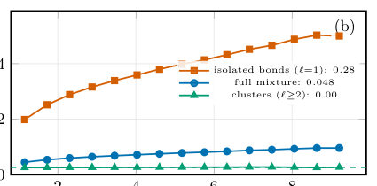
<figcaption class="paper-figure-caption"><b>Fig 2.</b> FIG. 2. Hartree fragmentation changes the matching ensem- ble. (a) After recursive boundary healing, the single-bond fraction f1 of active objects shows no downward trend and the active-object density Aisl = ρact/p is w0-independent [Eq. (5)]. (b) Matching law by sector at α = 2, V = t0, from island diagonalization: ℓ≥2 clusters are flat, surviving ℓ= 1 objects retain a finite logarithmic slope, and the full ensemble slope is ball ≃f 2 1 b1 (0.412 × 0.28 = 0.047 versus the measured 0.048). Statistical errors: ±0.01 on f1 and Aisl (batch means over 48 chains); fitted slopes ±0.01. Protocols and the remaining (α, V ) sets in the Supplemental Material [26].</figcaption>
</figure>
<figure class="paper-figure-card">
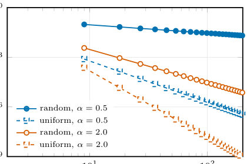
<figcaption class="paper-figure-caption"><b>Fig 3.</b> FIG. 3. Independent coefficient fluctuations are essential. Effective two-bond coupling at identical bare strength V : ran- dom coefficients (circles) leave the mixed second difference of Eq. (8) uncancelled, shown as the rms V R−α/(2 √</figcaption>
</figure>
<figure class="paper-figure-card">
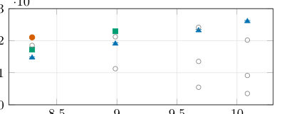
<figcaption class="paper-figure-caption"><b>Fig 4.</b> FIG. 4. Direct fixed-shell test of the pair-count scaling, Eq. (9): Y ≡Λ h2x−(4−2n−α)/(V t0) on a shell at R = 0.45 x, with the algebraic exponent fixed by Eq. (9), not fitted. Colored symbols: points inside the resonance-starved window w0/ℓcomb ≤0.15; gray open symbols: outside it, where the object-density asymp- totics fail [26]. Within the window the h−2 rescaling collapses the series and the fragmented side shows no progressive failure relative to the bond-side control; the accessible range tests the predicted algebraic scaling and its persistence across the reconstruction, and does not independently resolve the loga- rithmic correction.</figcaption>
</figure>
</div>

<p><strong>Summary.</strong> This theoretical work analyzes how fermionic chains with aperiodic potentials behave under long-range, power-law interactions. It identifies a critical transition point ($\alpha=2n$) where the system's resonant structure changes from simple bonds to complex, fragmented clusters. The key finding is that the overall scaling of pair correlations remains stable despite this structural reconstruction.</p>
<p><strong>Why it may be interesting.</strong> The study of localization and spectral properties in quasiperiodic systems with long-range disorder is highly relevant to understanding transport and correlation in disordered quantum materials.</p>
<details>
<summary>Detailed structure</summary>
<p><strong>Main problem.</strong> The paper investigates the survival of localization and the reconstruction of the resonant-object ensemble in aperiodic chains subjected to long-range power-law interactions.</p>
<p><strong>Main result.</strong> The asymptotic scaling of the pair-resonance scale remains robust across the critical point $\alpha=2n$, and the ensemble logarithm is shown to be carried by the surviving single-bond subpopulation.</p>
<p><strong>Method.</strong> The analysis uses resonance-counting arguments, pair-matching probability diagnostics, and fixed-shell tests to characterize the scaling of pair networks.</p>
<p><strong>Model / system.</strong> The model is spinless fermions on an open chain governed by a Hamiltonian including aperiodic potentials and random, long-range interactions $V_{ij}/|i-j|^\alpha$.</p>
<p><strong>Key observables.</strong> Resonance Supply ($N_0$), Pair Network Scale ($x_{	ext{pair}}$), Pair-density diagnostic $D(w)$, and the ensemble logarithm.</p>
<p><strong>Important parameters / regimes.</strong> The critical exponent $\alpha=2n$, the interaction strength $V$, and the ratio of local to pair scales.</p>
<p><strong>Assumptions / limitations.</strong> The analysis assumes the validity of shell coarse-graining and that the low-frequency matching density remains bounded during fragmentation.</p>
<p><strong>Figures summary.</strong> Figures illustrate the separation of different characteristic scales ($x_{	ext{bond}}$ vs $x_{	ext{pair}}$) and show the collapse of the pair-count scaling law $\Lambda(x)$ when tested against the theoretical prediction.</p>
<p><strong>Paper structure.</strong> The paper progresses by first establishing the resonance supply, then analyzing the transition at $\alpha=2n$ where Hartree fragmentation occurs, and finally confirming the robustness of the pair-resonance scaling law using detailed pair-counting diagnostics.</p>
</details>
<details>
<summary>Abstract</summary>
<p>For fermions in a slowly varying aperiodic potential with random interactions $V_{ij}/|i-j|^α$, the potential fixes the resonance supply $N_0 \propto L^{2-n}/h$. On crossing $α-2n$, wherever Hartree fragmentation is operative, the resonant-object ensemble reconstructs: turning-point runs fragment into clusters whose intrinsic matching law resolves no logarithmic singularity, while isolated wing bonds survive at finite density and restore a reduced logarithm. The scaling $x^{4-2n-α}_{pair} ln{x_{pair}} \propto h^2/(V t0)$ is unchanged. Random coefficient fluctuations sustain the $R^{-α}$ coupling; uniform ones cancel to $R^{-α-2}$.</p>
</details>
<p><sub><a href="#top">↑ back to top</a></sub></p>

<p><a id="paper-2608.29325"></a></p>
<h3 id="heavy-hole-light-hole-mixing-and-spin-photon-coupling-in-germanium-flopping-mode-qubits"><a href="http://arxiv.org/abs/2608.29325v1">Heavy-Hole--Light-Hole Mixing and Spin--Photon Coupling in Germanium Flopping-Mode Qubits</a></h3>
<p><strong>Authors:</strong> Jose Reina-Gálvez, Guido Burkard<br>
<strong>Type:</strong> theory · <strong>Category:</strong> quantum information and computing · <strong>PDF:</strong> <a href="https://arxiv.org/pdf/2608.29325v1">https://arxiv.org/pdf/2608.29325v1</a><br>
<strong>Analysis basis:</strong> full PDF text, analyzed in chunks
<strong>Topic relevance:</strong> <code>Tavis-Cummings &amp; cavity-many-emitter</code> <strong>1/5</strong> · <code>analog quantum simulation</code> <strong>1/5</strong></p>
<div class="figure-strip-hint">↔ Scroll figures horizontally</div>
<div class="paper-figures-scroll">
<figure class="paper-figure-card">

<figcaption class="paper-figure-caption"><b>Fig 1.</b> Figure 1. Schematic of the Ge double quantum dot considered in this work. Vertical confinement along the growth direction z is described by the finite potential V⊥(z), with well depth UHH/LH and widths dw and di. The left and right local- ized hole states are indicated in blue and red, respectively, and are connected by the interdot tunneling processes collec- tively denoted by tLR, including HH–HH, LH–LH, LH–HH, and spin–orbit-assisted channels. The energy ordering of the states is schematic and can vary in the actual simulations de- pending on the model parameters.</figcaption>
</figure>
<figure class="paper-figure-card">

<figcaption class="paper-figure-caption"><b>Fig 2.</b> Figure 2. (a,b) Energy spectrum as a function of detuning ϵ for two representative values of ULH, ULH = 232 meV and ULH = 217 meV, respectively. The corresponding eigenstate amplitudes at ϵ = 0, indicated by the vertical black dash-dotted lines in the top panels, are shown in panels (c,d) in the bonding–antibonding HH–LH basis for a low magnetic field B = 25 mT. At low magnetic field, panels (c,d) exhibit appreciable HH–LH mixing, and the states contain substantial admixtures of HH- and LH-like components. Increasing the magnetic field leads to nearly pure bonding and antibonding eigenstates, with the HH–LH admixture significantly reduced. The legends in the top panels correspond to the...</figcaption>
</figure>
<figure class="paper-figure-card">

<figcaption class="paper-figure-caption"><b>Fig 3.</b> Figure 3. (a,b) Excitation energies ∆m0 = Em −E0 at ϵ = 0 as a function of magnetic field for the eight-state truncated model, using ULH = 232 meV and ULH = 217 meV, respec- tively. (c) Relevant tunneling matrix elements as a function of magnetic field. Their decrease with increasing magnetic field reflects the reduction of the effective dot size.</figcaption>
</figure>
<figure class="paper-figure-card">

<figcaption class="paper-figure-caption"><b>Fig 4.</b> Figure 5. Cavity response amplitude |A| as a function of probe–cavity detuning ∆0 = ωc−ωR and magnetic field B for the HH pseudospin-flip transition with ULH = 232 meV and ϵ = 0. The left panel shows a narrow magnetic-field window around the low-field resonance, where the cavity response ex- hibits an avoided crossing associated with the hybridization between the cavity mode and the spin-like transition. The right panel shows the response at the intermediate-field reso- nance, where the charge character dominates and the vacuum Rabi splitting is no longer visible because of strong charge de- coherence.</figcaption>
</figure>
<figure class="paper-figure-card">

<figcaption class="paper-figure-caption"><b>Fig 5.</b> Figure 4. (a) Cavity transmission amplitude |A| as a func- tion of magnetic field B and detuning ϵ for the HH–HH pseudospin-flip regime, ULH = 232 meV, for ∆0 = 0. (b) Zoom of the low-field resonance marked by the gray rectan- gle in panel (a). (c) Resonance condition for the relevant transition energies relative to the cavity frequency. The black dashed lines indicate the boundaries of a 1% tolerance window around the resonance condition. The C-shaped resonance has a predominantly charge-like character, and therefore no vac- uum Rabi splitting is observed. We chose ωc/2π = 6.54 GHz.</figcaption>
</figure>
</div>

<p><strong>Summary.</strong> This theoretical study models hole-spin qubits in Germanium quantum dots, focusing on the role of Heavy-Hole/Light-Hole mixing. By incorporating this mixing, the authors show that new electric-dipole coupling channels become active, potentially leading to stronger coupling to microwave cavities than previously expected. This provides a key, tunable mechanism for advancing circuit-QED quantum computing platforms.</p>
<p><strong>Why it may be interesting.</strong> This work directly addresses the engineering of quantum coupling mechanisms in solid-state qubits, which is central to scalable quantum computing architectures. The explicit inclusion of valence band mixing provides a tunable knob for enhancing qubit-photon interaction.</p>
<details>
<summary>Detailed structure</summary>
<p><strong>Main problem.</strong> The study investigates how Heavy-Hole (HH)–Light-Hole (LH) mixing affects the spin–photon coupling mechanism in Germanium (Ge) flopping-mode qubits.</p>
<p><strong>Main result.</strong> The HH–LH mixing activates additional electric-dipole spin-coupling channels (LH–LH and LH–HH) that can yield larger spin–photon figures of merit compared to the conventional HH–HH transition.</p>
<p><strong>Method.</strong> The authors use a multiband Luttinger–Kohn framework within a Double Quantum Dot (DQD) model, analyzing the Hamiltonian structure and coupling to a cavity using input–output theory.</p>
<p><strong>Model / system.</strong> The system is a DQD in a Ge/SiGe heterostructure, modeled using a Hamiltonian incorporating kinetic, confinement, and spin-orbit interaction terms. The analysis focuses on the $J=3/2$ valence band subspace, treating HH and LH states explicitly.</p>
<p><strong>Key observables.</strong> Spin–photon coupling strength, spin–photon figure of merit, and linewidth for various spin-flip transitions (HH–HH, LH–LH, LH–HH).</p>
<p><strong>Important parameters / regimes.</strong> Confinement depths ($U_{HH}, U_{LH}$), interdot tunneling amplitudes ($t$), and the strength of the spin-orbit coupling ($\alpha_R$).</p>
<p><strong>Assumptions / limitations.</strong> The analysis assumes the applicability of the effective-mass approximation and simplifies the orbital sector by restricting the in-plane basis to the ground state ($j=l=0$).</p>
<p><strong>Figures summary.</strong> Figure 1 schematically illustrates the Ge DQD structure, detailing the confinement potential and the various tunneling processes (HH–HH, LH–LH, LH–HH) involved in spin-photon coupling.</p>
<p><strong>Paper structure.</strong> The paper builds the model by defining the full Hamiltonian using the Luttinger–Kohn framework, incorporating vertical confinement via a finite potential well. It then analyzes the resulting Hamiltonian in the DQD basis, demonstrating how HH–LH mixing introduces new, potentially superior, coupling channels for qubit-cavity interaction.</p>
</details>
<details>
<summary>Abstract</summary>
<p>Intrinsic spin--orbit interaction in germanium provides electrically active flopping-mode qubits without requiring magnetic-field gradients to generate spin--charge hybridization. We study double quantum dots (DQDs) with a multiband Luttinger--Kohn framework that retains heavy-hole (HH) and light-hole (LH) states on equal footing. Modeling vertical confinement with a finite confinement potential along the growth direction brings selected subbands into a regime of appreciable HH--LH mixing. This admixture activates electric-dipole spin-coupling through LH--LH and LH--HH transitions, complementing the conventional HH--HH pseudospin-flip resonance. For the parameter sets considered, these additional channels can produce larger spin--photon figures of merit than the HH--HH transition. HH--LH mixing thus supplies a tunable ingredient for qubit--cavity coupling in germanium hole-spin qubits and extends the operating regimes available to circuit-QED architectures.</p>
</details>
<p><sub><a href="#top">↑ back to top</a></sub></p>

<p><a id="paper-2608.30335"></a></p>
<h3 id="holographic-representations-of-topological-quantum-criticality-emergent-symmetry-approach-around-the-bott-clock"><a href="http://arxiv.org/abs/2608.30335v1">Holographic Representations of Topological Quantum Criticality: Emergent Symmetry Approach around the Bott Clock</a></h3>
<p><strong>Authors:</strong> Fan Yang, Fei Zhou<br>
<strong>Type:</strong> theory · <strong>Category:</strong> strongly correlated electrons · <strong>PDF:</strong> <a href="https://arxiv.org/pdf/2608.30335v1">https://arxiv.org/pdf/2608.30335v1</a><br>
<strong>Analysis basis:</strong> full PDF text, analyzed in chunks
<strong>Topic relevance:</strong> <code>Keldysh / 2PI / non-Gaussian methods</code> <strong>1/5</strong> · <code>analog quantum simulation</code> <strong>1/5</strong></p>
<div class="figure-strip-hint">↔ Scroll figures horizontally</div>
<div class="paper-figures-scroll">
<figure class="paper-figure-card">

<figcaption class="paper-figure-caption"><b>Fig 1.</b> Figure 1. Procedure of constructing the holographic theory of a tQCP. The left panel shows the IR EFTs and the right panel shows the UV-completed lattice models. We start with a d-dimensional lattice model of class-X with protecting sym- metry Gp and bulk lattice degrees of freedom N B f (d, Gp, ν1,2) (the superscript refers to the bulk) where ν1 and ν2 are the numbers of gapless boundary states of two gapped topological phases respectively. The IR EFT of the tQCP in the class X has an enlarged symmetry GtQCP = Gp × UEM, where UEM is an emergent symmetry, and gapless fermions Nf(d, Gp, δν). (Note the group structure may also be more complicated than a direct product depending on details of...</figcaption>
</figure>
<figure class="paper-figure-card">

<figcaption class="paper-figure-caption"><b>Fig 2.</b> Figure 3. Bott clock of topological insulators and supercon- ductors. +1 and −1 represents the square of TRS and PHS when they are present, and 0 means the absence of the sym- metry. Following the direction of the arrows, the topological classification remains the same when spatial dimension is in- creased by one.</figcaption>
</figure>
</div>

<p><strong>Summary.</strong> This work develops a holographic framework to describe topological quantum critical points (tQCPs) using emergent symmetries. By relating the gapless physics at a tQCP in $d$ dimensions to the boundary states of a gapped topological superconductor in $d+1$ dimensions, the authors establish a systematic method for classifying and understanding these critical points across different symmetry classes.</p>
<p><strong>Why it may be interesting.</strong> The holographic mapping between lower-dimensional critical points and higher-dimensional gapped phases provides a powerful theoretical tool for understanding quantum criticality in strongly correlated systems, linking symmetry protection across dimensions.</p>
<details>
<summary>Detailed structure</summary>
<p><strong>Main problem.</strong> The paper aims to construct holographic representations for a broad class of topological quantum critical points (tQCPs) by employing the concept of emergent symmetries.</p>
<p><strong>Main result.</strong> It demonstrates that the tQCPs can be mapped to the boundary states of higher-dimensional gapped topological superconductors, establishing a systematic holographic relationship around the Bott clock structure.</p>
<p><strong>Method.</strong> The core method involves using an emergent symmetry ($U_{EM}$) at the $d$-dimensional tQCP to construct an enlarged symmetry ($    ilde{G}_p$) for a $(d+1)$-dimensional bulk model, whose boundary dynamics then match the tQCP's infrared physics.</p>
<p><strong>Model / system.</strong> The study focuses on fermionic topological states, specifically within the framework of the Bott clock structure, involving Symmetry Protected Topological (SPT) phases in various dimensions ($d$ and $d+1$).</p>
<p><strong>Key observables.</strong> Emergent symmetries ($U_{EM}$), protecting symmetries ($G_p$), and the infrared dynamics of the boundary states.</p>
<p><strong>Important parameters / regimes.</strong> The spatial dimensions ($d$ and $d+1$) and the specific symmetry groups involved in the topological classification.</p>
<p><strong>Assumptions / limitations.</strong> The approach assumes that the anomalous degrees of freedom at the tQCP can be matched to the gapless surface fermions of a higher-dimensional bulk theory.</p>
<p><strong>Figures summary.</strong> Figure 1 illustrates the four-step holographic construction procedure, mapping IR EFTs to UV lattice models. Figure 2 compares the structure of $d$-dimensional SPTs to $(d+1)$-dimensional SPTs, showing the holographic link.</p>
<p><strong>Paper structure.</strong> The paper systematically develops the holographic construction, starting from the identification of emergent symmetries at tQCPs, upgrading the symmetry to define a higher-dimensional bulk model, and finally proving the boundary correspondence.</p>
</details>
<details>
<summary>Abstract</summary>
<p>In this article, we apply the idea of emergent symmetries to construct holographic representations of a broad class of topological quantum critical points (tQCPs) that appear in fermionic classes in the Bott clock. We show explicitly that around the Bott clock, an emergent symmetry $U_{EM}$ exists at a tQCP between different symmetry protected gapped phases with protecting symmetry $G_p$ in $d$ spatial dimensions. This emergent symmetry can be used to construct a $(d+1)$ spatial dimensional lattice model with a properly upgraded symmetry such as $U_{EM}\times G_p$ or $U_{EM} \rtimes G_p$, etc. By doubling the degrees of freedom of the adjacent topological class in $d$-dimensions, we successfully show that the $(d+1)$-dimensional lattice models constructed in this way have the desired enlarged symmetry groups that precisely belong to the adjacent topological classes, counterclockwise around the Bott clock. Furthermore, $d$-dimensional boundaries of these $(d+1)$ dimensional lattice models of gapped topological classes are shown to exhibit identical infrared dynamics as the corresponding tQCPs in the $d$-dimensional adjacent topological phases in the Bott clock, with lower symmetries.</p>
</details>
<p><sub><a href="#top">↑ back to top</a></sub></p>

<p><a id="paper-2608.30075"></a></p>
<h3 id="newtonian-gravitational-curvature-induced-entanglement-generation"><a href="http://arxiv.org/abs/2608.30075v1">Newtonian Gravitational Curvature-Induced Entanglement Generation</a></h3>
<p><strong>Authors:</strong> Mughees Ahmad Khan, Asad Ali, M. I Hussain, H. Kuniyil, Saif Al-Kuwari<br>
<strong>Type:</strong> theory · <strong>Category:</strong> quantum information and computing · <strong>PDF:</strong> <a href="https://arxiv.org/pdf/2608.30075v1">https://arxiv.org/pdf/2608.30075v1</a><br>
<strong>Analysis basis:</strong> full PDF text, analyzed in chunks
<strong>Topic relevance:</strong> <code>analog quantum simulation</code> <strong>1/5</strong> · <code>quantum measurements</code> <strong>1/5</strong></p>
<div class="figure-strip-hint">↔ Scroll figures horizontally</div>
<div class="paper-figures-scroll">
<figure class="paper-figure-card">

<figcaption class="paper-figure-caption"><b>Fig 1.</b> FIG. 1. Schematic of the proposed setup. A mechanical os- cillator of mass m and bare frequency ω0 is placed at a dis- tance R from a source mass M. The Newtonian gravitational potential VG(x) induces a curvature Γ ∝R−3 which renor- malizes the mechanical frequency to Ω2 = ω2 0 −2Γ. Two qubits (q1, q2) are coupled longitudinally to the oscillator with strengths λ1, λ2. The gravitational curvature controls the ef- fective susceptibility of the oscillator, thereby modulating the mediated two-qubit entanglement rate. The displacement x is measured along the line joining the oscillator and the source.</figcaption>
</figure>
<figure class="paper-figure-card">

<figcaption class="paper-figure-caption"><b>Fig 2.</b> FIG. 2. Effective-model entanglement dynamics as a function of gravitational curvature. (a) Two-qubit concurrence for ϵ = 0, 0.02, and 0.05 with no dephasing. Increasing ϵ shifts the oscillation via the enhanced susceptibility. (b) Same as (a) with independent qubit dephasing γϕ = 1.5 s−1; the envelope decays as e−2γϕt. (c) Differential entangling phase ∆ϕ = 2t[J(ϵ)−J(0)] versus time, showing linear accumulation of the curvature-induced phase difference. (d) Reduced two-qubit purity Tr(ρ2 q) under qubit dephasing only. Purity curves for the three ϵ values overlap in this panel because the dephasing channel is ϵ-independent in the effective model; the small spread becomes visible at late...</figcaption>
</figure>
<figure class="paper-figure-card">

<figcaption class="paper-figure-caption"><b>Fig 3.</b> FIG. 3. Open-system dynamics from the full master equation (11), retaining the mechanical mode explicitly. (a) Two-qubit concurrence: strong suppression between closure times due to the thermal factor (13), with revivals at tk = 2πk/Ωthat are exact in the unitary limit and reduced by e−Λ(tk) at finite κm and by the dephasing factor of Eq. (20). (b) Qubit–oscillator mutual information I(q:m), which vanishes at every closure for κm = 0. (c) Mean mechanical occupation ¯nm(t), oscillating about the thermal background under the spin-dependent force. (d) Reduced two-qubit purity Pq(t), showing partial revivals superposed on a secular envelope set by mechanical leakage and qubit dephasing....</figcaption>
</figure>
</div>

<p><strong>Summary.</strong> This paper proposes a novel quantum sensing protocol where the tidal field of a massive object induces a measurable, nonlocal phase shift between two qubits mediated by a mechanical oscillator. By treating gravity as a classical control field, the authors demonstrate that the entanglement generation rate is analytically dependent on the gravitational curvature. This provides a route for high-precision quantum sensing of spacetime curvature using established quantum hardware platforms.</p>
<p><strong>Why it may be interesting.</strong> This work directly bridges quantum sensing/metrology with fundamental physics (gravity), providing a concrete, measurable mechanism to detect spacetime curvature using quantum resources.</p>
<details>
<summary>Detailed structure</summary>
<p><strong>Main problem.</strong> To demonstrate that gravitational curvature can be used to control and generate nonlocal quantum correlations (entanglement) in a hybrid quantum system.</p>
<p><strong>Main result.</strong> The protocol successfully shows gravitational control over a quantum interaction, generating entanglement via a measurable, nonlocal two-qubit phase shift.</p>
<p><strong>Method.</strong> The analysis uses exact treatments (polaron transformation) for the closed system dynamics and derives the quantum limit for curvature estimation using a parity-based measurement.</p>
<p><strong>Model / system.</strong> The system is a hybrid architecture comprising two qubits coupled to a common mechanical resonator, where the coupling is modulated by the tidal field induced by a nearby source mass.</p>
<p><strong>Key observables.</strong> Nonlocal two-qubit phase ($\phi_{12}$), Quantum Fisher Information (QFI), and entanglement visibility.</p>
<p><strong>Important parameters / regimes.</strong> Gravitational curvature ($\Gamma$), mechanical frequency ($\omega_0$), and the coupling strength ($J$).</p>
<p><strong>Assumptions / limitations.</strong> The analysis assumes the source mass is static and the coupling is mediated by the mechanical oscillator's longitudinal motion.</p>
<p><strong>Figures summary.</strong> Figure 1 schematically illustrates the setup, showing the mechanical oscillator coupled to qubits, with the gravitational potential $V_G(x)$ inducing curvature $\Gamma$ that renormalizes the mechanical frequency $\Omega^2 = \omega_0^2 - 2\Gamma$.</p>
<p><strong>Paper structure.</strong> The paper progresses from defining the Hamiltonian incorporating the Newtonian interaction, deriving the renormalized frequency due to curvature, analyzing the resulting stroboscopic geometric phase gate, and finally addressing open-system dynamics and quantum estimation bounds.</p>
</details>
<details>
<summary>Abstract</summary>
<p>We show that gravitational curvature can control the generation of nonlocal quantum correlations in a hybrid qubit-mechanical device. The tidal field of a nearby source mass modifies the susceptibility of a shared mechanical oscillator, thereby tuning an oscillator-mediated qubit-qubit interaction and the resulting entangling phase. An exact treatment of the dynamics reveals stroboscopic geometric gates whose accumulated phase is directly sensitive to gravitational curvature. Treating the curvature as an unknown parameter, we derive the ultimate quantum limit for its estimation and identify a parity-based measurement that saturates this bound. Solving the full master equation with the mechanical mode retained explicitly, we find that thermal occupation of the mediator suppresses entanglement between the closure times but is undone at each closure, exactly in the unitary limit for any initial mechanical temperature, so that ground-state cooling of the oscillator is not a prerequisite for the protocol. Mechanical damping and qubit dephasing behave differently: they leak branch information irreversibly to the environment, and it is the heating and dephasing rates, rather than the bath occupation alone, that limit the entanglement visibility and the number of usable interrogation loops. In contrast to gravity-mediated entanglement proposals, entanglement is generated by the mechanical oscillator while gravity acts solely as a classical control field. We quantify the achievable curvature parameters; all curvature dependencies are analytic, allowing for exact rescaling of the results. The scheme therefore demonstrates gravitational control of a quantum interaction and provides a route to curvature sensing based on a nonlocal two-qubit phase rather than on local phase measurements.</p>
</details>
<p><sub><a href="#top">↑ back to top</a></sub></p>

<p><a id="paper-2608.29710"></a></p>
<h3 id="phase-diagram-and-critical-behaviour-of-the-two-dimensional-potts-model-with-long-range-quenched-disorder"><a href="http://arxiv.org/abs/2608.29710v1">Phase Diagram and Critical Behaviour of the Two-Dimensional Potts Model with Long-Range Quenched Disorder</a></h3>
<p><strong>Authors:</strong> Rodolfo Rocha, Leticia F. Cugliandolo, Marco Picco<br>
<strong>Type:</strong> theory · <strong>Category:</strong> statistical mechanics · <strong>PDF:</strong> <a href="https://arxiv.org/pdf/2608.29710v1">https://arxiv.org/pdf/2608.29710v1</a><br>
<strong>Analysis basis:</strong> full PDF text, analyzed in chunks
<strong>Topic relevance:</strong> <code>analog quantum simulation</code> <strong>1/5</strong> · <code>non-equilibrium universality</code> <strong>1/5</strong></p>
<div class="figure-strip-hint">↔ Scroll figures horizontally</div>
<div class="paper-figures-scroll">
<figure class="paper-figure-card">

<figcaption class="paper-figure-caption"><b>Fig 1.</b> Figure 1: q = 3 Potts model with a = 1. (a) Wrapping probability W(r, L) as a function of the parameter r = J2/J1. The horizontal dashed lines are at W3 = 0.8137 and W a=1 1 = 0.5915. (b) W1(r, L) defined in Eq. (3.4) vs. (J1−J2)2</figcaption>
</figure>
<figure class="paper-figure-card">

<figcaption class="paper-figure-caption"><b>Fig 2.</b> Figure 2: q = 3 Potts model with a = 0.5. (a) Wrapping probability as a function of the disorder strength r. The horizontal dashed lines are at W3 = 0.8137 and W a=0.5 1 = 0.5340. (b) W1(r, L) vs. (J1−J2)2</figcaption>
</figure>
<figure class="paper-figure-card">

<figcaption class="paper-figure-caption"><b>Fig 3.</b> Figure 3: q = 3 Potts model with a = 0.75 and different linear system sizes given in the keys. (a) Wrapping probability as a function of the disorder strength r. In the inset, a magnification around the crossing point. The horizontal dashed lines are at W3 = 0.8137 and W a=0.75 1 = 0.5580. (b) W1(r, L) vs. (J1−J2)2</figcaption>
</figure>
<figure class="paper-figure-card">

<figcaption class="paper-figure-caption"><b>Fig 4.</b> Figure 4: q = 3 Potts model. Rescaled magnetic susceptibility, 0.33L/16χ(L, β), as a function of β for a = 0.5 (a), a = 0.75 (b), and a = 1.0 (c). The value of r is written as a label in the panels and the system sizes are given in the keys.</figcaption>
</figure>
<figure class="paper-figure-card">

<figcaption class="paper-figure-caption"><b>Fig 5.</b> Figure 5: q = 3 Potts model with a = 0.5. (a) Scaled linear magnetic susceptibility as a function of the inverse temperature β for different system sizes. The drift towards higher values of β of the position at βmax of the left peak is clear. The vertical segments are the limits of the interval βmax(∞) = 0.36 ± 0.01. (b) Magnetisation density as a function of β. The two scales β ∼0.23 and β ∼23, for the onset of strong bonds and activation of weak bonds, respectively, are shown with vertical black segments. See the text for a discussion of the dotted curve.</figcaption>
</figure>
</div>

<p><strong>Summary.</strong> This paper rigorously maps the phase diagram of the 2D Potts model under long-range, correlated quenched disorder. By analyzing the wrapping probability and magnetic susceptibility, the authors distinguish between different critical regimes, confirming the validity of hyperscaling relations across various disorder strengths. It provides a detailed theoretical understanding of how disorder influences phase transitions in lattice models.</p>
<p><strong>Why it may be interesting.</strong> While focused on classical statistical mechanics, the study of critical phenomena in disordered systems, especially the distinction between different types of fixed points (finite vs. infinite disorder), provides theoretical frameworks relevant to understanding glassy dynamics in quantum many-body systems.</p>
<details>
<summary>Detailed structure</summary>
<p><strong>Main problem.</strong> The study investigates the phase diagram and critical properties of the two-dimensional Potts model when subjected to long-range quenched disorder.</p>
<p><strong>Main result.</strong> The work refines the phase diagram by distinguishing between regimes flowing to finite-disorder and infinite-disorder fixed points, confirming hyperscaling relations across different disorder strengths.</p>
<p><strong>Method.</strong> The analysis employs advanced techniques including computing the wrapping probability of Fortuin–Kasteleyn clusters and performing finite-size scaling analysis on magnetic observables.</p>
<p><strong>Model / system.</strong> The system is the $q$-state Potts model ($q=3, 8$) defined on a 2D lattice, with quenched bond disorder whose correlations decay via a power law $\langle J_i J_j 
angle \propto |x_i - x_j|^{-a}$.</p>
<p><strong>Key observables.</strong> Wrapping probability $W(r, L)$, magnetic susceptibility $\chi(L, eta)$, and magnetization density $\langle m 
angle(L, eta)$.</p>
<p><strong>Important parameters / regimes.</strong> Potts state number ($q$), disorder correlation exponent ($a$), disorder strength ratio ($r$), and system size ($L$).</p>
<p><strong>Assumptions / limitations.</strong> The analysis relies on the construction of correlated disorder via independent Ising model copies and assumes the critical point is analyzed at $eta=1$ for certain sections.</p>
<p><strong>Figures summary.</strong> Figures illustrate the dependence of the wrapping probability $W(r, L)$ on disorder strength $r$ for various exponents $a$, and show effective exponents $(\gamma/
u)_{    ext{eff}}(L)$ vs. $L$ to confirm scaling relations.</p>
<p><strong>Paper structure.</strong> The paper systematically analyzes the $q=3$ and $q=8$ cases, using the wrapping probability to map out the phase diagram, followed by a general confirmation of hyperscaling relations.</p>
</details>
<details>
<summary>Abstract</summary>
<p>We study the phase diagram and critical properties of the $q = 3$ and $q = 8$ Potts models with spatially correlated disorder governed by a power-law decay with exponent $a$. Building on the phase diagram proposed by Chippari et al. [3], where a transition from finite-disorder to infinite-disorder fixed points was identified as a function of a, we refine this picture by using wrapping probabilities of Fortuin-Kasteleyn clusters. Furthermore, using magnetic observables, we clarify the physical origin of the double-peak structure in the magnetic susceptibility and establish the validity of the hyper-scaling relation across all investigated regimes.</p>
</details>
<p><sub><a href="#top">↑ back to top</a></sub></p>

<p><a id="paper-2608.29079"></a></p>
<h3 id="quantum-discord-of-gaussian-states-in-non-inertial-frames"><a href="http://arxiv.org/abs/2608.29079v1">Quantum discord of Gaussian states in non-inertial frames</a></h3>
<p><strong>Authors:</strong> Siwei Li, Xiaofen Huang<br>
<strong>Type:</strong> theory · <strong>Category:</strong> quantum information and computing · <strong>PDF:</strong> <a href="https://arxiv.org/pdf/2608.29079v1">https://arxiv.org/pdf/2608.29079v1</a><br>
<strong>Analysis basis:</strong> full PDF text, analyzed in chunks
<strong>Topic relevance:</strong> <code>Keldysh / 2PI / non-Gaussian methods</code> <strong>1/5</strong> · <code>correlated / nonlocal dissipation</code> <strong>1/5</strong></p>
<div class="figure-strip-hint">↔ Scroll figures horizontally</div>
<div class="paper-figures-scroll">
<figure class="paper-figure-card">

<figcaption class="paper-figure-caption"><b>Fig 1.</b> FIG. 1: Schematic diagram of the worldlines for the inertial observer Alice and the uniformly accelerated observer Bob. The set (z, t) denotes the Minkowski coordinates, while the set (ζ, τ) denotes the Rindler coordinates. The causally disconnected Rindler regions I and II are indicated.</figcaption>
</figure>
<figure class="paper-figure-card">

<figcaption class="paper-figure-caption"><b>Fig 2.</b> FIG. 2: Schematic diagram of the worldlines for two uniformly accelerated observers, Alice and Bob. The set (z, t) denotes the Minkowski coordinates, while the set (ζ, τ) denotes the Rindler coordinates. The causally disconnected Rindler regions I and II are indicated.</figcaption>
</figure>
<figure class="paper-figure-card">

<figcaption class="paper-figure-caption"><b>Fig 3.</b> FIG. 3: Gaussian quantum discord for different mode pairs as a function of the acceleration a and the field frequency ω, with the squeezing parameter fixed at s = 1.</figcaption>
</figure>
<figure class="paper-figure-card">

<figcaption class="paper-figure-caption"><b>Fig 4.</b> FIG. 4: Gaussian quantum discord of the mode pair A-BI. (a) Discord as a function of the acceleration a and the squeezing parameter s for a fixed field frequency ω = 1. (b) Discord as a function of the field frequency ω and the squeezing parameter s for a fixed acceleration a = 2π.</figcaption>
</figure>
<figure class="paper-figure-card">

<figcaption class="paper-figure-caption"><b>Fig 5.</b> FIG. 5: Gaussian quantum discord of the mode pair BI-BII. (a) Discord as a function of the acceleration a and the squeezing parameter s for a fixed field frequency ω = 1. (b) Discord as a function of the field frequency ω and the squeezing parameter s for a fixed acceleration a = 2π.</figcaption>
</figure>
</div>

<p><strong>Summary.</strong> This paper analyzes the redistribution of Gaussian quantum discord when a quantum field undergoes the Unruh effect due to acceleration. By calculating discord for various mode pairs in Rindler coordinates, the authors show that initial correlations are redistributed rather than lost. The results provide detailed parameter dependencies, highlighting how squeezing and field frequency control the correlation in different spatial regions.</p>
<p><strong>Why it may be interesting.</strong> This work provides a detailed, quantitative study of how fundamental physical effects (like acceleration) alter quantum correlations, which is crucial for understanding quantum information processing in curved or non-inertial spacetime backgrounds.</p>
<details>
<summary>Detailed structure</summary>
<p><strong>Main problem.</strong> The paper investigates how the quantum discord, a measure of quantum correlation, is affected by the Unruh effect experienced by uniformly accelerated observers.</p>
<p><strong>Main result.</strong> The initial quantum correlation is not destroyed but is instead redistributed across the causally disconnected Rindler mode pairs, with the specific dependence on parameters varying by the mode pair considered.</p>
<p><strong>Method.</strong> The analysis uses the formalism of Gaussian states, characterized by their covariance matrix, to calculate the quantum discord for various mode pairs.</p>
<p><strong>Model / system.</strong> The system is a free quantum scalar field analyzed in Minkowski and Rindler coordinates, modeling the interaction between inertial and uniformly accelerated observers.</p>
<p><strong>Key observables.</strong> Gaussian quantum discord ($D$), measured for different mode-pair classes (e.g., inertial-accessible, accessible-accessible).</p>
<p><strong>Important parameters / regimes.</strong> Acceleration ($a$), mode frequency ($\omega$), and squeezing parameter ($s$).</p>
<p><strong>Assumptions / limitations.</strong> The analysis is restricted to Gaussian states, which are fully determined by their first and second moments.</p>
<p><strong>Figures summary.</strong> Figures schematically illustrate the worldlines and coordinate systems for one and two accelerated observers in Minkowski vs. Rindler coordinates, and show the variation of discord as a function of $a$, $\omega$, and $s$ for various mode pairs.</p>
<p><strong>Paper structure.</strong> The paper builds from the general formalism of Gaussian states and the Unruh effect to calculate discord for single-observer scenarios, then extends this analysis to the more complex two-observer case, detailing parameter dependencies for specific mode pairs.</p>
</details>
<details>
<summary>Abstract</summary>
<p>We investigate the redistribution of continuous-variable Gaussian quantum discord under the Unruh effect for both one and two uniformly accelerated observers. The discord shared between the inertial mode and the accessible accelerated mode, as well as that between the two accessible accelerated modes, decays monotonically with acceleration and vanishes in the limit $a\to\infty$, while the Unruh effect generates discord in all causally disconnected Rindler mode pairs. The initial quantum correlation is therefore redistributed across Rindler partitions rather than destroyed. We further characterize how the squeezing parameter $s$ and field frequency $ω$ control the discord in different mode-pair classes. For causally connected pairs, $s$ and $ω$ exert comparable, interchangeable effects; for cross-region pairs, the squeezing parameter dominates; and for intra-observer cross-region pairs, the field frequency is more influential. In the two-observer case, the $A_{II}$-$B_{II}$ pair exhibits non-monotonic behavior with a peak whose position shifts to larger $a$ as $ω$ increases, and both parameters contribute only weakly except near an optimal $\fracω{s}$ ratio.</p>
</details>
<p><sub><a href="#top">↑ back to top</a></sub></p>

<p><a id="paper-2608.30761"></a></p>
<h3 id="resonance-statistics-fock-space-branching-and-long-range-pair-networks-in-slowly-varying-interacting-chains"><a href="http://arxiv.org/abs/2608.30761v1">Resonance statistics, Fock-space branching, and long-range pair networks in slowly varying interacting chains</a></h3>
<p><strong>Authors:</strong> Yogeshwar Prasad<br>
<strong>Type:</strong> theory · <strong>Category:</strong> disordered systems and neural networks · <strong>PDF:</strong> <a href="https://arxiv.org/pdf/2608.30761v1">https://arxiv.org/pdf/2608.30761v1</a><br>
<strong>Analysis basis:</strong> full PDF text, analyzed in chunks
<strong>Topic relevance:</strong> <code>Frenkel-Kontorova</code> <strong>1/5</strong> · <code>analog quantum simulation</code> <strong>1/5</strong></p>
<div class="figure-strip-hint">↔ Scroll figures horizontally</div>
<div class="paper-figures-scroll">
<figure class="paper-figure-card">

<figcaption class="paper-figure-caption"><b>Fig 1.</b> FIG. 1. Exactness and robustness of the resonance supply. (a) Ratio of the exact phase-averaged resonant-bond count, the sum of Eq. (5), to the asymptotic law Eq. (6), at h/t0 = 200. For n = 1/2 the two agree to better than 0.6% over the entire range. For every fixed n &lt; 1 the ratio ultimately approaches unity, since ∆θi →0; the approach is however strongly nonuniform as n →1−— at n = 0.99 the ratio is still ≃1.8 at L = 8000 — and taking n →1−before the slowly varying limit gives the noncommuting value πβ/ sin(πβ) = 2.08 (dashed). (b) Measured phase-averaged resonant-bond count at n = 1/2, L = 2000 (400 realizations per point), divided by the asymptotic law: the bare count (circles) and the...</figcaption>
</figure>
<figure class="paper-figure-card">

<figcaption class="paper-figure-caption"><b>Fig 2.</b> FIG. 2. Forward branching of the resonant Fock graph against resonant-bond number. Each point is one (L, α, h) evaluation of Eq. (15), spanning 12 ≤L ≤32 and 0.5 ≤α ≤2. The dashed line marks the branching criterion B = 1; the scale Nc is read off by interpolating each (L, α) series through it, with no fit. Inset: the same data as B/Nres, which would be constant if B were proportional to Nres. It is not — it rises monotonically with Nres in every series — so no single constant of proportionality is used anywhere. The Monte Carlo error on each point is 0.12%–0.44%, well inside the markers, so the curvature is systematic. The finite-L independent-edge baseline is Bind/Nres = qL(L−2)/(L−1), Eq....</figcaption>
</figure>
<figure class="paper-figure-card">

<figcaption class="paper-figure-caption"><b>Fig 3.</b> FIG. 3. The exact resonant Fock graph carries no giant compo- nent at the forward-branching scale. Largest connected com- ponent of the exactly constructed graph, scaled by N 2/3 F (the mean-field/ random-graph critical reference scaling), against the measured resonance count, at α = 1, V = t0, for L = 12– 18 (200–50 realizations; batch-mean errors). At every fixed Nres the diagnostic falls with L: the graph moves away from percolation with increasing size at fixed resonance count. The dashed line marks the B = 1 crossing at this α (Nres ≃2.5– 2.55); the same behavior holds at α = 0.5 and 2 (Supplemental Material [52]).</figcaption>
</figure>
<figure class="paper-figure-card">

<figcaption class="paper-figure-caption"><b>Fig 4.</b> FIG. 4. Hartree fragmentation of the turning-point runs over the tested fragmentation domain, for the snapshot (unhealed) partition: bond-weighted mean island size ⟨ℓ⟩B against the bare run width w0 at (a) α = 1.5 and (b) α = 2 (increasing w0 at fixed V is equivalent to moving outward along the pair- network trajectory). For V ≥t0 the island size saturates at a w0-independent value consistent with ξfrag = p−1 br (dashed lines at 6.8 and 2.3 for α = 1.5, and 8.8 and 2.5 for α = 2, for V/t0 = 1 and 2, respectively). After recursive boundary healing (Sec. V D, Table I) the bond-weighted mean at V = t0 instead drifts upward with w0 while the count-weighted mean and Aisl stay fixed; the...</figcaption>
</figure>
<figure class="paper-figure-card">

<figcaption class="paper-figure-caption"><b>Fig 5.</b> FIG. 5. One pair is one-dimensional; the pair ensemble is not. For a fixed physical pair at V = 0 (triangles, four pairs pooled, 6 × 107 phases each) the conditional matching prob- ability divided by q is flat, fitting 4.795 + 0.0033 ln(1/q) — the coarea result Eq. (40). Averaging over the pair ensemble (circles and squares; L = 100, h/t0 = 25, α = 1, all separa- tions R ≥2) instead reproduces the independent-bond law Eq. (38), dashed, with no free parameter: the fitted slopes are 2.00(5) at V = 0 and 1.95(4) at V = t0 against the predicted 2. The bare and interacting ensembles have leading logarithmic slopes that agree within errors, so at these fixed-q parameters the logarithm is supplied...</figcaption>
</figure>
</div>

<p><strong>Summary.</strong> This theoretical work develops a microscopic theory for resonance statistics in interacting quantum chains subjected to slowly varying, aperiodic potentials and long-range disorder. The authors prove that the fundamental supply of local resonances is robust against interaction changes, while also mapping out three distinct physical thresholds governing the system's behavior. This work advances understanding of localization and connectivity in complex, disordered many-body systems.</p>
<p><strong>Why it may be interesting.</strong> The rigorous mathematical treatment of resonance statistics in the presence of disorder and long-range interactions provides deep insights into how local physics (resonances) interacts with global structure (long-range coupling) in disordered quantum systems.</p>
<details>
<summary>Detailed structure</summary>
<p><strong>Main problem.</strong> The paper develops the microscopic resonance theory underlying the behavior of resonant-object ensembles in slowly varying, aperiodic potentials with long-range pair interactions.</p>
<p><strong>Main result.</strong> The leading resonance supply law ($N_0$) remains unchanged by the interaction strength, and the analysis identifies three distinct long-range thresholds ($\alpha=1/2, \alpha=2n, \alpha=2$) that do not correspond to simple localization transitions.</p>
<p><strong>Method.</strong> The authors derive exact phase-averaged resonance statistics, develop a correlated common-phase comb structure, and analyze the resonant Fock-space graph using graph theory and scaling arguments.</p>
<p><strong>Model / system.</strong> The system is modeled as spinless fermions on an open chain governed by a Hamiltonian containing a slowly varying aperiodic potential ($h_{in}$) and random, long-range pair interactions ($V_{ij}/|i-j|^\alpha$).</p>
<p><strong>Key observables.</strong> Resonance Supply ($N_0$), correlated common-phase comb, Hartree variance, forward-branching scale ($h_{FB}$), and the pair-resonance scaling exponent.</p>
<p><strong>Important parameters / regimes.</strong> The interaction decay exponent $\alpha$, the potential modulation exponent $n$, and the ratio of interaction strength to potential energy ($V/h$).</p>
<p><strong>Assumptions / limitations.</strong> The analysis relies on developing exact phase-averaged statistics and separating the fixed-pair matching law from the shell-averaged correlation factor.</p>
<p><strong>Figures summary.</strong> Figures illustrate the collapse of measured resonant-bond counts onto the theoretical supply law, and plots track the forward-branching degree ($B$) relative to the independent-edge baseline, confirming the scaling criterion $B=1$.</p>
<p><strong>Paper structure.</strong> The paper progresses by first establishing the general resonance statistics, then developing the microscopic theory to handle interactions, analyzing the structure of the resonant Fock-space graph, and finally identifying and characterizing the multiple long-range thresholds.</p>
</details>
<details>
<summary>Abstract</summary>
<p>In a slowly varying aperiodic potential $h_i=h\cos(2πβi^n+φ)$ with random power-law density interactions $V_{ij}/|i-j|^α$, the resonant-object ensemble changes across $α=2n$, wherever Hartree fragmentation is operative, from isolated two-level bonds to a mixture of fragmented multi-site clusters and isolated wing bonds that survive at finite density, while the pair-resonance scaling $x_{\rm pair}^{4-2n-α}\ln x_{\rm pair}\propto h^2/(Vt_0)$ is unchanged~\cite{letter}. Here we develop the microscopic resonance theory underlying these results, together with its domain of validity. We derive the exact phase-averaged resonance statistics --- the supply $N_0\propto L^{2-n}/h$, the correlated common-phase comb, and the closed-form Hartree variance --- proving that the interaction leaves the leading supply law unchanged. Exact construction of the resonant Fock-space graph at $L\le18$ shows that the order-one forward-branching scale $h_{\rm FB}\propto L^{2-n}$ carries no giant component: one-step branching and connectivity are inequivalent. We separate the fixed-pair matching law from the shell-averaged $q\ln(1/q)$ law of the bond ensemble and develop the comb into a mesoscopic shell theory; we map the fragmentation domain, with its support threshold $V_*(α)$ and the boundary-healing recursion; and we treat the marginal case $α=2$, where shell and matching marginalities compound into a double logarithm. Three long-range thresholds emerge with distinct meanings --- $α=1/2$ (the exact variance threshold of the random Fock-space energy and the square-summability boundary of the leading LIOM-dressing estimate), $α=2n$ (change of the local resonant objects), and $α=2$ (marginality of the long-range shell sum) --- none of which is, by itself, a localization transition.</p>
</details>
<p><sub><a href="#top">↑ back to top</a></sub></p>
<hr>
<p>
<a href="index.html">← Index</a>
 · <a href="papers_05.html">← Previous</a> · <a href="papers_07.html">Next →</a>
</p>
<hr>

</body>
</html>
